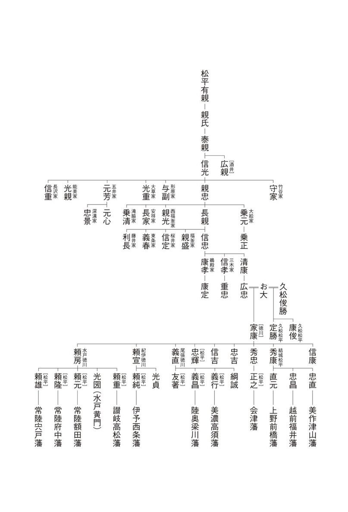
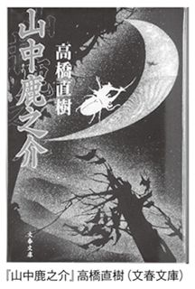

| 名字で読む歴史・時代小説 | |
| 森岡浩 | |
| (2012) | |
漫画 小説 一般書籍 RAW ZIP RAR 無料 ダウンロード http://13DL.NET
〈仕様について〉
電子書籍の閲覧では、デバイス・ビューアによって機能、表示に差が認められる場合があります。
〈おことわり〉
電子書籍版の内容は、原本の執筆・出版当時のまま収録しておりますが、 電子化にあたり、一部の画像・テキストが収録されていない場合があります。ご了承いただきたくお願いします。
〈ご注意〉
本書の全部または一部を著作権者ならびに東京書籍株式会社に無断で複製、転載、改ざんすること、また公衆送信を行なうことやホームページなどに掲載することを禁止します。このような行為は、著作権法違反により処罰の対象となります。
名字で読む 歴史・時代小説
ここ数年、空前の時代小説ブームが続いている。このブームを支えているのは文庫書き下ろしの時代小説で、佐伯泰英、風野真知雄、鈴木英治、鳥羽亮といった作家達が連作物の時代小説を次々と刊行し、ベストセラーとなっているものも多い。
かつて、歴史・時代小説の人気の高かった時期があった。司馬遼太郎を筆頭に、吉川英治、山本周五郎、海音寺潮五郎、山手樹一郎、山岡荘八、子母沢寛、舟橋聖一、村上元三、藤沢周平といった大家たちが、歴史小説、時代小説、史伝などの傑作を次々と雑誌に発表した時期で、それらは単行本、文庫本と形を変え、時代を超えて愛されている。
こうした歴史小説を紹介する本や雑誌は多いが、その多くは作家論や作品の紹介が中心で、歴史小説と事実の関係を扱ったものは少ない。もちろん、小説はあくまで小説であって、事実と違う部分があるのは当然のこと。しばしば小説と事実の違いを追及する人がいるが、それは歴史小説の読み方としては正しくないといえる。しかし、事実を知った上で、作家がどのように想像を巡らし、どの部分に虚構を構築しているかを知ることで、歴史小説を読む楽しみは二倍に膨らむはずだ。
また、歴史上の事実とされる事柄も、時代によって変化することもある。たとえば、戦国武将北条早雲の人物像は近年動きつつある。そのため、作品の発表された年代によって、作品における早雲像も変化しているのだ。
本書は、こうした歴史小説の登場人物を、名字・系図という視点から見つめ直してみたものだ。系図を軸として見直すことで、今までの固定観念とは違った見方もあることに気がつく。たとえば、源平合戦といわれた戦いも、系図から見る限りは、ちょっと事情が違っていることがわかるのだ。
また、真田一族を愛した池波正太郎、柳生一族をテーマとした作品の多い山岡荘八など、意外と特定の一族を得意とした作家が多いことにも気がつく。歴史作家は、長編小説を書く際には、ものすごく多くの資料を調査する。かつて、司馬遼太郎が新しい長編に挑むと、神田神保町から関連の古書が姿を消したともいわれている。こうしたすさまじい調査結果から、不要な部分を次々とそぎ落とし、最後に残ったエッセンスに、「虚構」という味つけをしたのが、大家達の名作群であるといえる。そして、そぎ落とされた周辺部分からは、しばしば好短編が生まれた。こうして、作家によって得意とする一族が生まれたのだ。
本書に登場する作品はすべて筆者が実際に読んだ小説から選んでいる。逆にいえば、筆者が読んだ小説からしか選んでいない。各人物や一族には、他にも名作はたくさんある。
本書をきっかけにして、歴史小説を読む際の新たな世界が広がるきっかけとなれば幸いである。
二〇一二年 三月 森岡 浩
『平家物語』と名字のルーツ
時代小説というと、江戸時代を中心に戦国時代から幕末あたりを舞台とした小説を指すことが多い。そうしたものからはやや外れるが、歴史をテーマとした小説では平家物語の世界を舞台としたものも多い。ＮＨＫの大河ドラマでも何度か取り上げられるなど、人気のあるテーマでもある。
代表作は吉川英治の大作『新・平家物語』（講談社 吉川英治歴史時代文庫）。文庫本一六冊にも及ぶ長編で、昭和四七年（一九七二）の大河ドラマは、この本が原作。大河ドラマ第一〇作ということで豪華キャストが話題になった。仲代達矢演じる平清盛は、従来の「驕れる平家」ではなく、先進性に富んだ人物として描かれている。
近年では宮尾登美子の『宮尾本 平家物語』（文春文庫）がある。こちらは平成一七年の大河ドラマ「義経」の原作。なお、二四年の大河ドラマ「平清盛」は原作となっている小説はない。
ここでは、番外として源平合戦の頃を舞台としたものもみてみたい。
平家と平氏の違い
源平合戦を舞台としたものは、なんといっても古典『平家物語』だろう。平清盛を主人公とした物語で、冒頭の「祇園精舎の鐘の声 諸行無常の響きあり 沙羅双樹の花の色 盛者必衰の理をあらはす」という文言は有名。中学校の授業で暗記させられた人も多いのではないだろうか。この「盛者必衰」こそが『平家物語』のテーマで、当時まだ地位の低かった武士から、位人臣を極めながら一代で滅んでいった平家への挽歌である。
ところで、源平の合戦というと源氏と平家の戦いであることは誰でも知っている。しかし、なぜ源「氏」に対して、平「家」というのだろうか。もちろん、平氏といもいわれるが、源平合戦では平家という言葉を使うのが普通だ。
源氏の「源」や、平氏の「平」は、ともに姓である。古代から、天皇家には姓や名字はない。そこで、天皇から分家して一家を興して臣下となる際には、天皇から新しく姓を賜った。当初は「清原」や「在原」など、その都度新しい姓を賜っていたが、弘仁五年（八一四）に嵯峨天皇の子どもが「源」という姓を賜って以降は、「源」と「平」の二つに固定された。
つまり、これ以降に天皇家から分家した人は、すべて「平」か「源」を名乗っている。こうした人達の子孫が源氏や平氏である。天皇家からの分家は何度も行われたため、源氏も平家も祖となった天皇は何人もおり、それぞれ先祖の天皇の名をとって、清和源氏（清和天皇の子孫）、村上源氏（村上天皇の子孫）、桓武平氏（桓武天皇の子孫）などといわれている。
源氏や平氏の人達は、もともとは天皇の子どもや孫である。その家柄のよさから当初は朝廷で活躍していたが、やがて天皇との関係が遠くなるにつれて、朝廷での地位も下がってきた。
とくに平安中期以降には朝廷の要職は藤原氏の一族が独占するようになり、源氏や平家の子孫も公卿となれるのはごく一部だけになってしまった。そこで、彼らは地方の官僚となって現地に移り住み、武士化していったのだ。天皇家の分家の末裔だけに地方では名声があり、やがて武士として活躍するようになる。
平氏の末裔は関東地方で武士化したものが多い。彼らは坂東平氏と呼ばれ、自らの領地の地名を名字として名乗った。神奈川県三浦半島を領した三浦氏、今の千葉市付近を本拠地とした千葉氏などが代表である。坂東平氏は純粋の武士として、京の朝廷とは別次元の価値観のもとに活動した。
これに対し、伊勢国（三重県）に領地のあった一族は伊勢平氏と呼ばれたが、彼らは京にあって下級官僚として朝廷に仕え続けた。その仕事は犯罪人の捕縛など、公家のなしえない武力を用いるものが主である。朝廷では名字を使用することはなく、「平」という姓のままで仕えていた。
当時の朝廷では、藤原氏を「藤家」、菅原氏を「菅家」、大江氏を「江家」、清原氏を「清家」と呼んだ。したがって平氏は「平家」と呼ばれたのだ。
つまり、平氏とは、「平」姓を賜ったいろいろな流れの平氏一門全体をさすのに対し、「平家」とは朝廷に仕えていた伊勢平氏の一門のみを指すのだ。従って、『平家物語』は平氏全体の物語ではなく、清盛を中心とした伊勢平氏の物語となっている。
源平合戦はなかった!?
平成一七年のＮＨＫ大河ドラマで「義経」と、二四年の大河ドラマ「平清盛」。主人公こそ違うが、源平合戦でそのメインであることには違いがない。
では、日本史上における源平合戦とは何だったのだろうか。
小・中学校で習った知識では、貴族にかわって政権を握った平氏政権の横暴が目立つため、源頼朝を中心とした源氏の一族が平家打倒を目指して挙兵し、全国統一を果たした戦い、といったところだろうか。
高校の日本史のレベルだと、平家は武士だったにもかかわらず貴族化したため、自らの政権樹立を目指した武士階級が源頼朝を旗頭として源氏の白旗のもとに集結して平氏政権を打倒、貴族政治の幕を引いた戦い、という感じだろうか。
さて、源平合戦は、伊豆国に流されていた源頼朝が治承四年（一一八〇）に挙兵し、地元の目代山木兼隆を討ったことで始まった。山木兼隆は桓武平氏の一族で、平家打倒の幕開けに血祭りにあげられたものだ。
以後、奥州からかけつけた異母弟の源義経をはじめ、源氏の白旗の元に各地から武将が集結。義経を実質的な総大将として壇ノ浦で平家を滅ぼすと、頼朝は鎌倉に源氏による初の武士政権を打ちたてた。一般的には、平家にかわって源氏が政権をとった、とされているが、当時の武将達をよくみてみると、この説にはかなり疑問を感じることになる。
伊豆に流されていた頼朝は一介の流人にすぎず、当然配下の武士などは一人もいなかった。山木氏を討った最初の挙兵でも、その中心勢力となったのは、妻・政子の実家である北条氏であった。
北条氏は源氏ではなく、桓武平氏の名門の一つ。しかも、桓武平氏の嫡流である平国香の子孫である。伊豆の国市にある北条という地名がルーツで、代々地元の官僚としてかなり実力を持っていた。しかし、目代として中央から伊豆に派遣された平兼隆が、近くの山木に居を構えて山木氏と名乗り、土着したことから両者は対立した。守勢にまわっていた北条氏としては、山木氏を討つことで勢力の逆転を狙ったともいえる。
頼朝が山木氏を討つと、相模国から土肥実平、土屋宗遠、岡崎義実が馳せ参じてきた。この三人はいずれも桓武平氏の一族である。
頼朝はこれらの武将と石橋山にこもったが、平家方の討伐軍にさんざんに敗れた。命からがら石橋山から逃げた頼朝は、真鶴半島から舟に乗り三浦半島に勢力を持っていた三浦氏のもとに赴いた。この時、三浦義明は頼朝や一族を逃して、自らは討ち死にした。この三浦氏もまた桓武平氏の一族で、平国香の弟・良茂の子孫にあたる。
三浦義明の奮戦で、三浦半島をからくも脱出した頼朝一行は、久里浜から船で東京湾を渡り、対岸の安房に渡った。ここから房総半島を北上した頼朝を迎えたのが、下総・上総の大勢力であった、千葉氏と上総氏だった。千葉氏と上総氏は同族で、ともに平国香の弟・良文の子孫。この両家の大軍を加えた頼朝は勢力を回復し、改めて平家打倒ののろしをあげる。義経が駆けつけたのはこの後のことである。
ここまで見てくると、頼朝の鎌倉幕府創業を行った実質部隊は、源氏ではなく平家＝伊勢平氏の政権から外れていた坂東平氏達だったことがわかる。そして、平家討伐後に源義経と対立して義経を破滅においやった梶原景時も桓武平氏の出である。
つまり「源平合戦」とは、「源氏」と「平氏」の政権争いなどではなく、「朝廷で貴族化した伊勢平氏」対「武士であり続ける坂東平氏」の平氏内主流争いにすぎなかったのだ。坂東平氏はその旗頭として源頼朝を戴くことで、佐々木氏など源氏の一族も自陣営に呼びこむことができ、戦を有利に進めることができたにすぎない。
彼らにとって、奥州からやって来た源義経の活躍は全くの計算外で、平家を滅ぼした後は、源氏の力を伸ばさないためにも義経は討伐してしまわざるを得なかったのだ。
また平清盛は実母がはっきりとしない。そのため、実父も忠盛ではないともいわれ、小説では白河天皇の子という設定が多い。つまり、天皇の落とし胤であるため、武士でありながら清盛には最初から貴族として栄達の道が開かれていたということになる。この説に従えば、平家は政権をとって貴族化したのではなく、あらかじめ貴族になるべき存在だったことになる。いずれにせよ、源平合戦というのは系図から見れば錯覚にすぎない。山木館の急襲に始まって壇ノ浦に終わる一連の戦いは、貴族と武士の折衷である過渡的な平家政権と、真の武士政権の戦いなのだ。
平家滅亡後、頼朝は奥州の藤原氏による前近代的な平泉政権を倒すと、鎌倉に真の武士政権である鎌倉幕府を樹立した。しかし、源氏の血統は暗殺などですぐに絶え、以後は代々執権にあった桓武平氏の北条氏を頂点とする、坂東武士達の政権に変貌した。
室町時代後半になると、公に認められた権力ではなく、各地で実力によって地域を支配する人々が台頭してきた。いわゆる戦国時代の始まりである。そして、戦国時代は、恰好の歴史小説の舞台でもある。架空の人物を主人公にした時代小説は江戸時代を舞台としたものが多いが、実在の人物を主人公とした歴史小説は、戦国時代と幕末が多い。
北条早雲の登場
さて、この戦国時代の幕開けを告げたのが、関東の雄・北条早雲である。北条早雲はまだ謎の部分も多く、歴史小説の題材にもなりやすい。
早雲は、文明八年（一四七六）後継ぎをめぐる内紛が起こっていた今川家に、北川殿を頼って駿河国に移り住んだことで歴史の表舞台に登場する。北川殿は早雲の妹とも姉ともいわれる人物である。
そして、北川殿の子である氏親を助けて今川家の当主の座につけ、さらに氏親に対立する小鹿範満を討ったことで駿河興国寺城（静岡県沼津市）を与えられ、一国一城の主となったのである。
興国寺城主となった早雲は、今川家の領地を侵さないよう東に進出。やがて相模に進出し、今川家の後ろ楯を得ながら相模国を統一して、ついに大名にまで成り上がった。
これ以降、出自や権威によらない実力の時代である戦国時代に突入したのだ。
早雲の前半生
早雲の前半生はよくわからない。一般的には、大道寺太郎、多目権兵衛、荒川又次郎、荒木兵庫、山中才四郎、在竹兵衛の六人だけを連れて今川家を訪れたところから始まり、やがて同家の客分という立場から、自らの実力で小田原を本拠とする大名にまで成り上がったとされている。
では、北条早雲のルーツはどこにあるのだろうか。鎌倉時代、同じ小田原には執権北条氏があった。しかし、早雲はこの執権北条氏とはなんの関係もない。
かつては、北条早雲は出自のあやしい浪人あがりとされてきた。小説ではこの謎の前半生をどうとらえるかで大きな違いが出る。また、六人の家臣の素性もさまざまで、作品によっては微妙に名前を変えているものもあり、人数も異なることもある。
早乙女貢の大作『北条早雲』（文春文庫）では、早雲は伊勢にいた牢人という設定。ただし、もとは足利義視に仕えていたとし、股肱の臣となる大道寺太郎、荒木兵庫、山中才四郎、荒川又次郎、在竹兵衛の五人とは伊勢で知り合い、伊勢神宮の神官との争いから伊勢を逃れて今川家のもとに移り住む。北条早雲の前名である伊勢新九郎の「伊勢」は伊勢国にちなむ、ということだ。
一方、早雲を扱った小説の代表作ともいえる司馬遼太郎『箱根の坂』（講談社文庫）では、新九郎は室町幕府の有力御家人だった伊勢氏の傍流で、京都で鞍造りをしている。若い頃は備中にいたとし、大道寺家は近隣の国人階級の家で、山中家や荒木家はその下に属する地侍といったところか。在竹大蔵は新参の家臣で、多目権平と荒河又次は商人の手代という設定。
『箱根の坂』は全三巻だが、新九郎が駿府に下るのは中巻で、前半生に多くを割いているのが特徴。
実は、近年の研究では、早雲は伊勢氏の分家である備中伊勢氏の一族という説が有力。そもそも、一介の牢人のきょうだいが、当時将軍家に次ぐ名家とされる今川家に嫁ぐことはない。幕府の重臣である伊勢氏の一族であるからこそ可能だったことだ。
さらに、生年に関しても新説が出ている。従来は永享四年（一四三二）とされていた。これだと駿河下向は四十代半ば。そのため、早雲は晩年になって活躍した大器晩成型の武将といわれることが多い。
一方、最近発表された新説では康正二年（一四五六）生まれで、駿河下向は二〇歳前後。北川殿は年齢的に考えて妹ではなく姉となる。
一九九六年に書き下ろされた中村晃『北条早雲 理想郷を夢見た風雲児』（ＰＨＰ文庫）では、このあたりの研究を踏まえて新九郎は備中国荏原荘に伊勢備前守盛定の子として生まれたとある。やがて本家の命で京に出て将軍の申次衆となるなど、その出自にあやしさは全くない。荒木家は伊勢に住む赤松家の遺臣で、残りの五人はその仲間。ここでは六人の長は荒木兵庫となっており、早雲との結びつきもあまり深くない。ただし、この小説では生まれは永享四年のまま。
二〇〇二年に上梓された南原幹雄『謀将 北条早雲』（角川文庫）では康正二年生まれで、北川殿は姉となっているなど、小説も時代とともに変化してしていくことがわかる。
関東を制覇
さて、早雲が一代で大名となった北条氏だが、実は早雲自身は「北条」という名字は名乗っていない。後北条氏が「北条」という名字を使いはじめたのは二代目の氏綱の代からだ。
氏綱が「北条」を名字とした理由ははっきりとはわかっていないが、相模国を制圧したのをきっかけに、名門である「北条」の名字を借用して自らの権威づけに利用したのだろう。
氏綱の代に武蔵国にまで領国を広げた北条氏は、三代目の氏康の代に関東を制した。
海道龍一朗『北條龍虎伝』（新潮文庫）は氏綱を主人公とした小説で、冒頭は四面楚歌の状況下におかれた氏康だが、実質的な物語は二代目氏綱が「伊勢」から「北条」に名乗りをかえるところから始まる。さらに、小説半ばでは鶴岡八幡宮小別当大庭良能から、室町時代の関東の歴史と、その中での北条氏の立場が語られるなど、氏綱だけではなく、後北条氏全体を俯瞰した小説となっている。
戦国後期にはその所領が二四〇万石にも達したが、氏直の時に豊臣秀吉に敗れて直系は滅亡した。
北条氏のその後
小田原で北条氏が滅亡したとき、後北条氏は完全に滅んだと思っている人も多いが、実はその後も分家が続いている。
氏直のおじの氏規は、幼少の時に今川家に人質となっており、同じく人質として今川家にいた徳川家康と面識があったといわれる。秀吉が小田原城を包囲した際、家康は氏規を通じて北条氏に降伏の交渉をしている。
北条氏の滅亡後、生き残った氏規はのちに河内国で北条氏を再興。家康が政権をとったのちは河内狭山藩の藩主となって、明治維新まで続いている。
いきなり私事で恐縮だが、筆者が初めて歴史小説を読んだのが中学一年のとき、作品は新潮文庫の司馬遼太郎『国盗り物語』であった。以来四〇年近く、相変わらず新潮文庫の同書は売れている。そもそも、この小説が「サンデー毎日」に連載されたのは昭和三八年から四一年にかけてだから、すでに五〇年近くが経過している。
実は近年の研究の結果、道三の〝国盗り〟の過程は大きく変貌しつつあるのだが、作品としての『国盗り物語』は色あせてないといえる。
斎藤道三の素性
さて、文庫版で四冊に及ぶ『国盗り物語』は、前半が斎藤道三篇、後半が織田信長篇である。
同書では斎藤道三は法漣房と名乗る妙覚寺の僧が、松波庄九郎と名乗って京の油屋・奈良屋をのっとり、さらに美濃にくだって土岐頼芸に仕えたとしている。とくに、「油を注ぐときに漏斗を使わず、一文銭の穴に通してみせます。油がこぼれたらお代は頂きません」という口上で人心をつかんだ話は有名。
そして、策謀の限りを尽くして頼芸の絶大なる信頼を得ると、利用価値のなくなった頼芸を裏切って追い出してついに美濃国一国を手中に収め、見事徒手空拳で国を盗るという話である。
昭和四八年（一九七三）にはＮＨＫ大河ドラマで放送され、一介の油売りから戦国大名となった斎藤道三は一躍全国的に知名度がアップした。というより、道三の一般的なイメージは『国盗り物語』によってつくられたといっても過言ではない。
しかし、近年この道三の実像は違ったものになってきている。妙覚寺の僧侶であった新左衛門尉は、西村と名乗って美濃に移り、長井弥二郎に仕えた。後に頭角を現していき、やがて長井の名字を称するようになった。
その子左近大夫（道三）の代になると、守護代斎藤氏の名字を名乗ったとされる。つまり、道三の国盗りは、道三一代で成し遂げたのではなく、親子二代のことらしいのだ。道三の前名である、松波庄九郎や西村勘九郎という名も資料的には信憑性に乏しい。
その後の斎藤氏
美濃の国主となった道三だが、やがて長男義龍と対立するようになる。そもそも義龍は道三の子ではなく、旧主土岐頼芸の子である、という説すらある。史実的な裏付けはないが、小説ではよく取り上げられ、神坂次郎の短編『血みどろの父子相克』ではこれがテーマ。『国盗り物語』や、坂口安吾の短編「梟雄」など、義龍を土岐頼芸の子としたものは多い。
義龍と道三の対立に際し、道三は「国を盗った」領主であることから、国人層の多くは義龍側についた。その背景には義龍が土岐頼芸の落とし胤だからということもある、というわけだ。国人層に見放された道三は稲葉山城を追われ、長良川合戦で討ち死にする。
義龍は道三と比べて能力がおとる、といわれることが多いが、実際には美濃の内政に尽くしており、戦乱に明け暮れた道三の後始末で能力を発揮している。しかし、義龍は三五歳で死去、あとを継いだ龍興は道三の婿にあたる織田信長によっ一九歳で美濃を追われ、美濃斎藤氏は三代で滅んだ。
その信長を本能寺で討った明智光秀の家老に斎藤利三がいる。利三は道三が乗っ取る前の守護代美濃斎藤氏の一族で、斎藤義龍や稲葉一鉄に仕えた後、縁戚関係にある明智光秀に仕えたという。利三の末娘のお福は、徳川三代将軍家光の乳母で、大奥で絶大な権力を振るった春日局である。
こうしてみると、栄枯盛衰はあるものの、その時代の上層部同士にはそれなりのつながりある、ということがよくわかる。
斎藤の書き方
ところで、斎藤道三の「さい」の字はどう書くのが正しいのだろうか。
「さいとう」には色々な書き方がある。そして、「斎藤」「斉藤」「齋藤」「齊藤」という四つの名字がどういう関係にあるかは、「さいとう」さん本人でもよくわかっていない人も多いのではないだろうか。
漢字という観点からみると、「斎」と「齋」は新旧の関係で、「斉」と「齊」も新旧字体による違い。つまり、「斎藤」と「齋藤」、「斉藤」と「齊藤」は同じである。
これに対して「斎」と「斉」は、似ているだけで本来は別の漢字なのだが、名字の上ではこの四つは混同して使われている。
「斎藤」「斉藤」という名字のルーツは、ともに藤原氏の一族。藤原利仁の子の叙用が伊勢神宮に奉仕する斎宮寮のトップである斎宮頭となり、「斎宮」の「斎」をとって、斎藤を姓としたのに始まる。ただし、当時は旧字体のため正しくは「齋藤」である。
しかし、「齋」の字は難しい。そこで、略字の「斎藤」が使われるようになり、やがて新字体の普及で戸籍上も「斎藤」とする人が増えた。ところが、この省略の過程に、より簡単な「斉藤」を使う人が登場したのだ。そして、戸籍に登録する際に、「斉」を旧字体に直した「齊藤」も生まれた。現在では「斎藤」を使用している人が最も多く、次いで「斉藤」。旧字体の「齋藤」や「齊藤」は少ないが、戸籍上は旧字体だが、日常生活では新字体、という人も多い。
ところで、おもしろいのは、「さいとう」さんの分布。「斎藤」さんは圧倒的に東日本に多く、「斉藤」さんは西日本に集中している。「さいとう」に限らず、全体的に、東日本に比べて、西日本の名字はなぜか画数の少ないものが多い。
斎藤氏の祖利仁は母が越前の出だったため、斎藤氏はまず越前で栄え、疋田斎藤氏と河合斎藤氏にわかれた。美濃の斎藤氏は、河合斎藤氏の分家で、代々土岐氏の守護代をつとめた名家である。
戦国時代に中国地方を制して一二〇万石を領し、幕末には薩摩の島津家とともに維新の原動力となった毛利氏は、日本を代表する武家の一つ。しかし、その出自は武家には珍しい大江氏で、ルーツも中国地方ではなく、神奈川県にある。
毛利氏のルーツ
毛利氏のルーツは神奈川県にある。しかも、武家は清和源氏、桓武平氏、藤原北家秀郷流などが多いが、毛利氏の出自は公家として活躍した大江氏である。
大江氏のルーツは古代に古墳に副葬する埴輪を作成していた土師氏。古墳製作が盛んな時代には栄えていたが、その衰退とともに一族の力も衰えていった。そこで平安時代はじめに、菅原氏とともに天皇家に申し出て新たに「大江」の姓を賜り、学問の家として再出発した。
以後、菅原氏ともに朝廷で活躍、とくに菅原道真失脚後は朝廷を代表する学問の家として活躍したが、やがて日野家の台頭とともに衰えていった。
平安時代末期、一族の広元は源頼朝に招かれて鎌倉に降り、鎌倉幕府創業の際にその屋台骨づくりに大きな力を発揮した。広元の子孫はそのまま鎌倉幕府のもとで武士となり、各地に広がっていったのだ。そのうちの一つが広元の子季光を祖とする毛利氏で、所領は相模国愛甲郡毛利荘、今の神奈川県厚木市毛利台付近である。
毛利一族の変転
鎌倉時代初期、執権北条氏と、有力氏族の三浦氏が争った宝治合戦では、毛利季光は三浦泰村に与して敗れたことから本拠地の毛利荘を没収された。
しかし、越後にいてこの合戦に参加しなかった四男の経光は、以後も越後国刈羽郡佐橋荘（新潟県柏崎市）と安芸国高田郡吉田荘（広島県安芸吉田市）の地頭を続けた。つまり、分流であったがために、厄災を逃れることができたのだ。
越後にいた毛利氏は、時親の時に安芸吉田荘に移って同地の小土豪となった。これが大名毛利家の始まりである。
以来、毛利氏は郡山城に拠って高田郡を中心に分家を出し、徐々に所領を拡大していった。しかし、戦国時代まではあくまで有力国人の一つにすぎなかった。
中国の覇者へ
安芸の山間部にいた一介の土豪を、戦国時代を代表する大名に発展させたのが毛利元就である。
戦国中期には、大内氏を滅ぼした陶晴賢を厳島で破って一挙に長門・周防・安芸・備後・石見の五ヶ国を制し、更には山陰の尼子氏も滅ぼして中国地方一〇ヶ国を支配した。
山岡荘八の長編小説『毛利元就』（講談社 山岡荘八歴史文庫）は、元就の不遇な幼年時代から、厳島の戦いで陶晴賢を破って中国地方を制覇するまでを描いた、文庫本で二巻に及ぶいかにも山岡作品らしい新聞小説。
永井路子の長編『山霧 毛利元就の妻』（文春文庫）は、妻の目を通して元就を書いた異色作。吉川国経の娘美伊の方（小説では、おかた）が、二二歳の元就に嫁入りするところから始まる。それから死去するまでを描いた作品で、元就の人生でいえば厳島の合戦前までの半生にあたる。
平成九年（一九九七）のＮＨＫ大河ドラマ「毛利元就」は、この小説を原作としており、美伊の方の死後はオリジナル。
山岡作品にしても永井作品にしても、毛利元就の一生ではなく、厳島の戦い前後までしか描いていない。これは偶然ではなく、元就の生涯の要は小土豪が乾坤一擲の戦いを経て大大名になりあがるまでにある、とみているのだ。
なお、元就の死までの生涯を追った作品としては古川薫『覇道の鷲 毛利元就』（新潮文庫）がある。
三本の矢
さて、毛利元就といえば、三本の矢の教えが有名。
ある日、元就は枕元に三人の息子、隆元、吉川元春、小早川隆景を呼び寄せ、一本の矢を折るよう命じた。息子たちが難なくこれを折ると、次は三本を束にして折るよう命じたが、息子たちは誰も折ることができなかった。そこで元就は、「一本では脆い矢も束になれば頑丈になる」ということを示し、三兄弟の結束を強く訴えかけたというものだ。
つまり、他家を継いだとはいえ、吉川元春・小早川隆景は、本家毛利家を助け、三家そろって栄えていかなければならない、ということである。
一般には元就臨終間際の遺言とされているが、実は長男の隆元は元就より先に死去しているので辻褄が合わない。
これは「三子教訓状」といわれる、三人の子どもに対する実在の文書をもとにして創作されたものといわれている。
関ヶ原合戦では、西軍の大将となった毛利家に対し、吉川・小早川両家は東軍に通じ、その結果毛利家は滅亡を免れた。しかし、小早川家は合戦の二年後に秀秋が跡継ぎのないまま死去、断絶している。
この秀秋は実は豊臣秀吉の甥で、小早川家を継いだ際に譜代の家臣の多くは毛利家に転じており、毛利一族の小早川家とは別家という見方もある。
また、明治維新後、公爵となった毛利家の一族が小早川家を再興し、男爵を授けられている。
その後の毛利氏
さて、元就の長男隆元は若くして亡くなったため、元就の後は孫の輝元が継いだ。輝元は豊臣秀吉の五大老の一人となり、安芸広島で一二〇万石の大身であった。
しかし、関ヶ原合戦で西軍の総大将となったため、江戸時代には長門萩三六万九〇〇〇石と、わずか三分の一の身代にされてしまった。
幕末、藩論を討幕に統一し、薩摩藩とともに戊辰戦争で新政府を樹立した背景には、このときの恨みがあるといわれる。
ところで、幕末に薩摩とともに討幕をリードした毛利家だが、幕末の当主である毛利敬親を扱った小説は少ない。幕末の長州は圧倒的に藩士が主役なのだ。しかし、こうした賢臣を次々と登用したのが敬親である。そういう意味で、敬親は維新回天の隠れた功労者であるといえる。
武田信玄とともに戦国時代を代表する武将が越後の上杉謙信である。両者は川中島で何度もあいまみえながら、結局雌雄を決することはできなかった。父親を追放して自ら当主となり、あくなき領土拡張をめざした信玄と、大義名分を重んじて中央への野心をいだかなかった謙信。対照的な二人の戦いは、戦国史をひもとく重要なキーワードである。
上杉氏のルーツ
武田家が鎌倉時代から続く甲斐の名門であるのに対し、上杉家は室町時代には関東管領をつとめた名家である。しかし、上杉謙信は若い頃は長尾景虎と名乗っていた。その領地も関東ではなく越後である。謙信と関東管領上杉家の関係はいったいどうなっているのだうか。
関東管領の上杉家は、丹波国何鹿郡上杉荘（京都府綾部市）をルーツとし、藤原北家の公家・勧修寺家の支流にあたる。鎌倉幕府は、源氏の嫡流が三代で滅んだ後、親王を将軍として迎えていた。宗尊親王が鎌倉幕府六代将軍となって鎌倉に下向した際についてきたのが勧修寺重房で、幕府から上杉に領地を貰って上杉氏を名乗り、以後武士化した。
室町時代には幕府の重臣となって山内家・宅間家・犬懸家・扇谷家の四家に分裂、山内家が代々関東管領を世襲していた。
戦国時代になると、小田原の北条家の拡張によって次第に圧迫され、永禄元年（一五五八）、上杉憲政はついにその所領を支えられなくなり、越後の守護代をつとめていた長尾景虎の許に逃げた。そして、憲政は長尾景虎に庇護してもらうだけでなく、なんと「上杉家」という名跡そのものを景虎に譲ってしまったのである。この長尾景虎こそ、後年の上杉謙信である。
上杉謙信は天才的な用兵の一方で、戦国武将とは思えない清廉な人物で、戦国時代を扱った長編小説では必ずどこかに登場するといってもいい。もちろん謙信を主人公とした小説はたくさんある。
大作『天と地と』（文春文庫）は上杉謙信の一生を追った海音寺潮五郎の代表作だ。いわゆる名将としての謙信よりも、長尾景虎の精神的成長を軸にした小説である。
一方、吉川英治の長編『上杉謙信』（講談社 吉川英治歴史時代文庫）は、謙信三三歳から始まる。川中島の合戦をメインとした小説で、戦時中の昭和一七年という執筆時期の影響を受けて、登場する人物は、謙信のみならず、みな清く正しい武士道を体現している。
長尾氏のルーツ
上杉家が藤原氏の公家の出なら、名跡を譲られた長尾氏のルーツはどうなっているのだろうか。
越後守護代の長尾氏は桓武平氏の出身で、相模国高座郡長尾荘（現在の横浜市栄区）がルーツ。鎌倉幕府初期の有力御家人の一つだったが、嫡流は北条氏の勢力拡張の犠牲となって滅んでいる。
一族は鎌倉時代の終わり頃から上杉氏に従うようになり、室町時代には山内上杉氏に仕えて、一族は上野・下野・越後などに広がった。
長尾景虎が生まれたのは、このうちの越後長尾家である。越後長尾家は上杉氏のもとで、越後の守護代をつとめていたが、戦国時代初期に守護上杉房能を殺して、実質的に越後国を支配していた。
上杉氏の方は南北朝時代に宅間家が没落したのを皮切りに、徐々に勢力が衰えていった。宅間家に続いて上杉禅秀の乱を起こした犬懸家が滅亡、天文十五年（一五四六）には上杉朝定が戦死して扇谷家も滅んだ。
永禄元年（一五五八）、最後に残った山内上杉家の上杉憲政も北条氏の前にとうとう関東管領を支えきれなくなり、越後の長尾景虎のもとに逃れざるを得なくなったのである。
この年を境に関東の名門上杉家は一旦滅んだ。そして越後に新しい戦国大名の上杉氏が誕生したのである。
従って、戦国武将上杉謙信と、江戸中期の名君として知られた上杉鷹山は先祖―子孫の関係にあるが、室町幕府で関東管領などをつとめた名家の上杉氏とは直接の血縁関係はないことになる。
また、本来の長尾家は桓武平氏だったが、上杉家の名跡を継いだ時点で、藤原氏という「姓」も継いでおり、平姓の長尾景虎は、藤原姓の上杉謙信となったのである。
直江兼続のこと
上杉謙信といえば、その重臣直江兼続を忘れるわけにはいかない。戦国時代を扱った歴史小説では、兼続は重要人物として登場することが多いが、教科書などには全く登場しないことから、一般的な知名度は低かった。
しかし、ＮＨＫ大河ドラマ「天地人」で取り上げられ、妻夫木聡が主演したことで、一躍知名度が上昇した。子ども時代を好演した加藤清史郎も一躍人気者となっている。なお、「愛」という漢字をあしらったユニークな兜は、テレビ上の演出ではなく実際に使われたものだ。
この作品の原作は、地元新潟出身の火坂雅志の同名の小説。樋口家に生まれて直江家の養子となり、秀吉からの勧誘にものらず一生を上杉家のために尽くした兼続の生涯を追った大河小説である。
ところで、この直江家、非常にユニークなルーツを持っている。というのも藤原京家の末裔と伝えているのだ。
平安時代の朝廷を席巻した藤原氏は、北家・南家・式家・京家の四家があり、公家の世界を制覇したのは北家の末裔。また、大友氏や山内氏の出た秀郷流、斎藤氏の出た利仁流、伊達氏の出た山蔭流といった武家も北家の末裔である。
南家の末裔も武家となり、伊東氏や工藤氏、狩野氏、相良氏などとなった。式家は奈良時代に公家として朝廷で活躍している。しかし、京家だけは全く栄えることができず、その子孫も定かではない。
そうしたなか、直江家は、この藤原京家の子孫と伝える数少ない一族なのだ。京家の祖・麻呂からきっちりとつながった系図が伝わっているわけではないが、貴重な一族であるといえる。
その後の上杉家
謙信は四九歳で急死、生涯妻帯しなかったため、長尾氏出身の景勝、北条氏出身の景虎という、二人の養子による跡目争いである御館の乱が起こった。
直江兼続をはじめ側近の多くがついた景勝が、旧関東管領上杉氏家臣の推す景虎を破って上杉家を相続。豊臣政権下では五大老の一人となり、会津若松で一二〇万石を領した。
しかし、関ヶ原合戦では西軍に属したことから、慶長六年（一六〇一）出羽米沢三〇万石に減転となった。さらに寛文四年（一六六四）には三代藩主綱勝が跡継ぎのないまま急死して断絶の危機を迎え、綱憲が末期養子となったことでなんとか存続したものの、領地は半分の一五万石に削られた。四代目となった綱憲は吉良上野介の長男で、上杉家は元禄赤穂事件（忠臣蔵）にも巻き込まれていく。
さて、大大名だった戦国以来の多くの家臣を抱えるなかでの禄高半減により、このあと米沢藩の財政はきわめて窮乏した。この時に財政を立て直したのが、名君と呼ばれる上杉鷹山である。緊縮財政をしく一方で産業の振興をはかり、藩の財政を立て直した。このあたりは童門冬二『小説 上杉鷹山』（集英社文庫）に詳しい。
川中島を挟んで上杉謙信と激しく争った武田信玄。上杉謙信は名門・上杉の名跡を譲られたものだが、武田信玄の出た武田家は、島津氏とともに戦国時代を代表する名家である。
武田家というと、名将武田信玄が一代で築きあげたというイメージを持っている人も多いが、信玄が一代で築いたのは信濃など、甲斐以外の地域。甲斐国には、甲斐源氏と呼ばれた清和源氏の名門一族が広がっており、武田氏はこの甲斐源氏の本家筋にあたる家で甲斐の守護もつとめていた。
甲斐源氏武田氏のルーツ
甲斐源氏というが、実は武田家の名字のルーツは山梨県ではなく、茨城県にある。源義清が現在のひたちなか市にある武田郷に住んで武田氏を称したのが祖で、のちに罪を得て甲斐に流されてそのまま土着、甲斐源氏の祖となったものだ。
鎌倉時代初期には武田信義が源頼朝に従い、『平家物語』にもその名前が登場する。その後、駿河国の守護に任じられたが、武田家の勢力拡張を怖れた頼朝によって長男や叔父が謀殺されている。
信義の子五郎信光は、甲斐と安芸の二ヶ国の守護を兼ね、子孫は甲斐武田家と安芸武田家の二流にわかれた。しかし、その後はあまり振るわず、甲斐と安芸の二ヶ国の有力豪族の一つという地位にとどまっていた。
この間、甲斐武田家は、一族を次々と周辺地域に分出し、同族による支配体制を固めていたが、応永年間には上杉禅秀の乱に巻き込まれて武田信満が自害、子信重は一時的に甲斐を脱出するなど、不遇な時代が続いた。
さらに、一族の内紛などを経た後、永正四年（一五〇七）に十歳で家督を継いだ信虎が内紛を集結させて甲斐国を統一した。
信玄の登場
甲斐を統一した武田信虎は家臣の評判がよくなく、重臣を味方につけた長男の晴信によって駿河に追放された。この晴信がのちの信玄である。
信玄は甲斐だけでなく、信濃や駿河も制圧したが、北方の上杉謙信との戦いが長引いたためになかなか上京できなかった。やっと元亀三年（一五七二）になって上洛を開始、破竹の勢いで進撃したものの、翌年信濃国伊那で急死、全国統一の夢を果たすことはできなかった。
跡を継いだ勝頼は、長篠合戦で最強といわれた騎馬軍団が織田軍の鉄砲隊の前に敗れ去ったのちもしばらく勢力を保ちつづけていたが、天正十年（一五八二）ついに織田信長・徳川家康連合軍に敗れて天目山に自刃し、名家武田家は滅んでしまった。
鉄の結束力を誇った武田軍団だが、木曽の木曽氏をはじめ、一族の穴山梅雪、重臣小山田信茂らが次々と裏切り、天目山まで従ったのはわずか五十人ほどだったという。
こうした武田信玄・勝頼をテーマとしたのが、諏訪生まれの作家新田次郎である。大作『武田信玄』（文春文庫）をはじめ、その続編『武田勝頼』（講談社文庫）、父信虎の最後を追った「信虎の最期」など、武田氏を扱った小説を多数発表、山岳小説とともに新田次郎の作品群の二つの柱のうちの一つとなっている。
井上靖も武田氏をテーマとした作品を書いている。有名なのは長編『風林火山』（新潮文庫）だが、勝頼を描いた『天目山の雲』（角川文庫）もある。偉大な父信玄を持った勝頼の苦悩がテーマだ。
軍師山本勘助
武田信玄の軍師として名高いのが、山本勘助である。江戸初期に書かれた『甲陽軍鑑』にしか登場しないことから、長くその実在性すら疑われていた。しかし、昭和四四年（一九六九）に発見された市河文書に「山本菅助」という名があるのがわかり、その後も武田家家臣の「山本菅助」に関する史料が見つかっている。現在では、この山本菅助が軍師・山本勘助と同一人物であろうとされている。
いずれにせよ、その生涯が謎に包まれていることから、多くの小説家によっていろいろな解釈がなされている。
市河文書発見前の昭和四〇年（一九六五）に発表された、新田次郎『まぼろしの軍師』では、勘助の子鉄以を通して、なぜ勘助が幻なのか、ということを描いている。短編ながら、前半の勘助の活躍と、後半の幻の勘助の対比が絶妙。
最も有名な井上靖『風林火山』では武田家の重臣・板垣駿河守を襲撃するという狂言を機に武田家に仕官し、信玄に仕えて諏訪頼重を暗殺。以後は、由布姫（諏訪御料人）の生んだ勝頼のために信濃攻略に専心する。映画やテレビでは、これを原作としていることが多い。
前述の『武田信玄』では、今川家の間者として武田家に入り、やがて武田信玄に仕えて今川義元を殺害する。この作品では、勘助は軍師ではなく間者となっている。
武田家のその後
武田勝頼が天目山で自刃したことで、戦国大名としての武田家は途絶えたが、実は武田家の末裔は現在まで続いている。
信玄の二男信親（竜芳）は盲目だったことから戦禍を逃れ、子孫は徳川幕府から表高家に任命された。また、七男信清の子孫も米沢藩主上杉家に保護され、米沢武田家として代々続いている。
大正時代、このどちらが武田家の直系かをめぐって論議が戦わされたことがある。現在では高家だった二男信親の系統を直系とし、当主は武田家家臣末裔者の会である「武田家旧温会」の顧問をつとめている。
池波正太郎の代表作の一つ『真田太平記』（新潮文庫）は、信州の戦国大名・真田家の勃興から、近世大名としての基礎を築くまでを描いた大作である。新潮文庫版で十二冊にも及ぶ長い小説にもかかわらず、その人気は高い。
また、「まぼろしの城」「覚兵衛狂乱図」など、『真田太平記』の周辺の人物ををとりあげた小説も多く、これらを合わせた〝真田物〟は池波正太郎の作品群の中でも大きな位置を占めているといえる。
真田一族のルーツ
さて、真田一族のルーツは、平成一八年（二〇〇六）に上田市に合併した旧真田町。有名な氏族だが、実は、歴史はそれほど古くはない。
一般的には、真田一族の祖は、戦国時代初期に活躍した真田幸隆。幸隆の父が海野棟綱で、幸隆が真田に住んだため真田氏を名乗ったとされる。ただし、真田家初期の系図は資料によって大きく食い違い、どれが正しいかは、今もって判然としない部分が多い。そして、幸隆とその子昌幸、孫の信之・幸村（信繁）兄弟までが真田三代と呼ばれている。平成二三年（二〇一一）に上梓された火坂雅志『真田三代』（ＮＨＫ出版）は、まさにこの三代を扱った長編である。
しかし、真田家は実はもっとも古い、という説がある。室町時代中期に起きた大塔合戦の参加者に「実田」と名乗る武士が登場しており、これが「さなだ」と読むと考えられているからだ。また、他の室町時代の資料でも「真田」を名乗る武士が見られることなどから、近年では、これらが真田氏の遠祖であると考えられている。つまり、幸隆は海野家から分かれて、新たに真田氏を興したのでなく、室町時代から続く在地武士真田氏の名跡を継いだことになる。
天文一〇年（一五四一）、武田信虎は諏訪氏や村上氏とともに海野氏を攻め、棟綱と幸隆は敗れて上州に逃れた。その七年後、父信虎を追放した信玄は村上義清を破って東信を支配した。この時に、信玄の家臣として真田幸隆が再登場するのである。
以後、幸隆は武田信玄の重臣として活躍する一方、小県郡から西上野（群馬県）にかけての地を支配した。幸隆と長男の信綱は長篠合戦で討ち死にし、その後を継いだのが幸隆三男の智将・昌幸である。
関ヶ原合戦と大坂の陣
関ヶ原合戦では、昌幸・幸村父子は西軍、昌幸の長男・信之は東軍に属し、親子で敵対することになった。
西軍についた昌幸・幸村はわずか二五〇〇の軍勢で上田城に拠り、三万八〇〇〇という大軍の徳川秀忠軍を迎えた。父子の目的は秀忠に勝つことではなかった。この大軍勢の関ヶ原到着を遅らせ、実際の戦闘での徳川勢の数を削減することにあった。そして、膠着状態が続けば、日和見の大名たちが西軍に雪崩を打つことを想定していたのだ。
真田勢は、実に八日間もこの大軍勢を上田にくぎづけにした。このため秀忠は合戦に間に合わず、当初の目的はほぼ達せられたといっていい。そして、真田父子は一躍その名を知られることになったが、肝心の関ヶ原の戦いはわずか一日でかたがついてしまった。秀忠の到着しなかった東軍は、当初こそ押されていたが、小早川秀秋らの裏切りもあって、わずか一日で西軍は惨敗したのだ。
合戦後は、昌幸父子は高野山に追放され、真田氏の本流は滅亡した。しかし、徳川方についた信之は、徳川政権下で大名として生き残る。東西どちらが勝とうとも、真田家は必ず続く、というのも、昌幸の意図の一つだった。
大坂の陣に際しては、幸村が高野山を脱出して大坂方に加わって籠城。その鮮やかな脱出振りや、戦略や戦術のない負け戦の中、華々しい活躍をみせて討ち死にし、以後、幸村は小説や講談のヒーローとなった。立川文庫で流布した『真田十勇士』や、そこから派生した猿飛左助、霧隠才蔵といったキャラクターは、真田氏を離れて独自の活躍をするようになった。
その後の真田家
関ヶ原合戦で東軍についた信之は、戦後信濃上田と上野沼田で九万五〇〇〇〇石を与えられ、のち松代一〇万石に転じた。
池波作品では信之はこのあとも幾多の危機にあう。「碁盤の首」では元家臣の馬場主水によって幕府に訴えられ、「獅子」では、二代目信政死去後起こったお家騒動の芽を、老齢の信之が摘む様子が描かれている。
さらに江戸中期には他藩と同じく財政が悪化、これを乗り切る家老恩田木工の活躍は『真田騒動』（新潮文庫）に詳しい。一つの家の興亡を時代を超えて一人の作家が書き続ける例は非常に珍しいといえる。
こうして数々の難局を乗り切って真田家は続き、幕末には真田幸貫が老中をつとめている。
池波の死後、史料蒐集に協力した上田市の古書店主らが発起人となって、市内に池波正太郎真田太平記館が開館している。
平成二三年（二〇一一）のＮＨＫ大河ドラマの主人公は「江」だった。このドラマが始まったとき、「江」という女性がどういう人物だったのか知っていた人はほとんどいなかったのではないだろうか。
大河ドラマの主人公には著名な歴史上の人物を配することが多い。平成二〇年に放送されて高い視聴率を誇った「篤姫」も珍しく一般的にはあまり知られていない女性が主人公だったが、放送後は「篤姫」は著名人の仲間入りをしている。「江」はどうだったのだろうか。
浅井氏の出自
さて、江の父・浅井長政は、北近江の戦国大名であった。「浅井氏系図」では、藤原北家の公家三条公綱の末裔とあり、これをもとに浅井氏を藤原姓と記載してある資料もある。
この三条公綱とは、三条実美などの出た清華家（五摂家に次ぐ家柄）の三条家ではなく、明治以降は「嵯峨」と改姓した大臣家の正親町三条家のこと。
この一族の公綱が天皇のとがめを受けて近江守護の京極氏に預けられ、近江国浅井郡丁野村（滋賀県長浜市）に蟄居していたときに、地元の娘との間に重政をもうけた。公綱はのちに京に戻ったが、重政はそのまま近江に留まって「浅井」と名乗り、浅井氏の祖になったとしている。
しかし、これには全く根拠はなく、地方の名家によく見られる貴種落胤譚の一つである。通常、貴族や大名の末裔であれば、正しい系図などに記載されているはずだ。そこで、なんらかの事情で一時期地方に暮らしていた公家や大名などと、地元の娘の間に生まれた子どもが、そのままその地に住みついて一族の祖となった、とするもので、上は浅井氏のような大名から、下は庄屋といったクラスまで、こうした落胤譚は各地にある。
もちろん、これらの落胤伝説には、真実といえるものはほとんどない。これらは、その土地の支配者であることには歴史的な理由がある、ということを強調するために後世に創作されたものなのだ。
近江の京極氏の場合も、祖とされる重政以前から同地に浅井と名乗る一族があり、おそらくこの地に古くから住む土豪の末裔だろう。室町時代に丁野郷の国人として台頭し、代々近江守護だった京極氏に仕えていたとみられている。
そもそも浅井氏は、浅井長政の祖父・亮政以前のことはよくわからない。実力がすべてだったと思われがちな戦国時代でも、やはり政治的にはある程度の出自は必要だったのだろう。
浅井氏の読み方
浅井長政の読み方は、一般的には「あさいながまさ」といわれているが、戦国時代に詳しい人だと、「あざい」と濁って読むことがある。というのも、戦国時代を研究している人の間では、正しくは「あざいながまさ」である、というのが常識だからだ。大河ドラマ「江」でも、浅井氏のことを「あざい」と発音していた。
これは、平成二二年（二〇一〇）に長浜市に合併した滋賀県東浅井郡浅井町という地名が、郡名も町名もともに「あざい」と濁って読んで読んでいたことや、『節用集』という史料に「あざい」と振られていることに由来している。
しかし、この史料では「朝倉」も「あざくら」と読んでいることや、現在の東浅井郡が昔から「あざい」だったかどうかは確認できないことから異論もあり、「やはり、あさいが正しい」という説もあってはっきりとしない。
そもそも、歴史の資料には基本的にルビは振られていない。たとえ読み方が書いてあっても、濁点は振らないのが普通で、濁る濁らないというのははっきりとしないことが多いのだ。
濁るか濁らないかは、方言や発音のしかた（口を大きくあけるとか、鼻濁音を使うとか）に左右されるため、地域や時代によって異なるはずだ。
江の生涯
「江」の生涯はよくわからないことも多い。そもそも名前も、これまでは「小督」という名前で登場することも多かった。人名事典では法名の崇源院という名前で収録されていることが多い。
江の特徴は、その縁戚関係にある。なにしろ、伯父が織田信長、義兄（姉の夫）が豊臣秀吉、義父（夫の父）が徳川家康なのだ。戦国の三英雄をすべて身内にした人物はあまりいないだろう。
しかも、それだけではない。徳川三代将軍家光は実子で、第一〇九代明正天皇は孫にあたる。つまり、江戸初期において、将軍と天皇はともに江の血筋だったのだ。ただし、女性天皇であった明正天皇は結婚せず、現在の天皇家とは直接つながってはいない。
結果的にみると栄華を極めた江だが、そこにたどり着くまでは数奇な運命をたどった。生まれた直後に小谷城が落城、一二歳で佐治一成に嫁いだ後、三度の結婚。
実父は浅井長政、再婚した実母は豊臣秀吉に敗れて落城で自刃し、自らは両親を滅ぼした相手に養育されるなど、このうえない波乱万丈の人生を送っている。そもそも、徳川秀忠と結婚したときはまだ豊臣秀吉が健在で、秀忠が二代将軍となるとは考えられなかったはずだ。
大河ドラマ「江」は、脚本家田渕久美子の書き下ろしで、原作はない。江を扱った小説としては永井路子の『乱紋』（文春文庫）が有名。
同氏には「お江さま屏風」という短編もある。お茶々（淀君）、お初、お江の三姉妹の確執を描き、最も器量が劣っていたはずのお江が人生の勝利者となる歴史の皮肉を扱った佳作である。
近年人気の上がっている戦国武将に長宗我部元親がいる。かつては、話題にあがることも少なかったが、現在の戦国ブームでは、その中心人物の一人となっている。
元親は一代で四国全土を制覇しながら、直後に豊臣秀吉の大軍勢の襲来を受けて土佐一国に戻され、さらに後継ぎで期待の高かった長男は九州で戦死するなど、悲劇の武将でもある。なお、名字は「長曾我部」と書かれることも多い。
長宗我部氏のルーツ
長宗我部氏のルーツは、土佐国長岡郡宗部郷（高知県南国市）。先祖は、古代に中国から渡来した秦氏であるという。
長宗我部氏は、鎌倉時代初期に信濃国から土佐国長岡郡宗部郷に移ってきた秦能俊が祖。宗部郷は香美郡と長岡郡にまたがっており、長岡郡の宗部郷という意味で長宗我部氏を名乗ったという。ちなみに、香美郡側の宗部郷には中原氏の一族が移り住んで、香宗我部氏を名乗っている。
鎌倉時代に地頭となり、周辺に多くの分家を出して、岡豊城を中心として一族による支配体制を築いた。とはいえ、その支配地域は狭く、室町時代に細川氏が土佐守護代として入国した後は、その下で吸江庵の寺社奉行をつとめている。
戦国時代初期、長宗我部兼序が本山氏、山田氏、吉良氏、大平氏の連合軍に攻められて戦死、子・国親は中村の一条氏のもとに逃れて滅亡寸前まで落ちぶれた。しかし、その後岡豊城に戻ると、子の元親の時に土佐一国を統一。さらに、阿波の海部氏、讃岐の十河氏、伊予の河野氏を降して四国全体も支配した。津野氏、吉良氏、香宗我部氏といった土佐の主要豪族や、讃岐の香川氏なども縁組みによって一族に取り込んいる。
四国の覇者となった元親だが、豊臣秀吉に敗れて再び土佐一国の領主に戻された。そして、秀吉の九州征伐では、嫡子の信親を失い、長宗我部家は落日の時を迎える。
元親を主人公とした小説では、司馬遼太郎『夏草の賦』（文春文庫）が代表作。斎藤内蔵助利三の娘、菜々の嫁入りで始まるこの作品も、いかにも司馬遼太郎らしい小説の一つ。小説のラストの部分で、信親死後の元親に対してはかなり突き放して書いてあるのも特徴だ。主人公に全面的に肩入れするのではなく、司馬史観といわれる独特の歴史観をもとに、やや冷めた目で主人公を追い続けている。
元親人気の高まった近年では、いずれも文庫書きおろしの近衛龍春『長宗我部元親』（講談社文庫）や荒川法勝の同名の小説がある。ともに元親の一生を史実に沿って追った作品である。
その後の長宗我部氏
信親亡き後、元親の跡を継いだのは四男の盛親。しかし、関ヶ原合戦で西軍に属したため改易となり、大坂の陣では豊臣方に属して大坂城に入城し、戦後六条河原で切られ、長宗我部氏は滅亡した。
盛親を扱った小説も、司馬遼太郎の長編『戦雲の夢』（講談社文庫）が有名。短編では柴田錬三郎「どもり浪人」もある。これは、時雨宮左門という架空の側近を主人公に据えつつ、関ヶ原から大坂の陣にかけての盛親の考えと行動を描いたもの。
また、司馬遼太郎には長宗我部康豊を主人公とした短編「信九郎物語」もある。康豊は元親没後に生まれた六男で、大坂の陣後足立姓に変えて酒井家に仕えたという人物である。
さて、長宗我部氏は盛親の死で完全に滅亡した、と思っている人が多いが、実は元親の弟の親房の子孫が島氏と改称して残り、維新後に長宗我部姓に復姓して現在まで続いている。
このあたりを書いたのが、小説ではないが、長宗我部友親の『長宗我部』。子孫からみた、遠祖から現代までの壮大な一族の物語である。
また、由井正雪とともに慶安の変を起こした丸橋忠弥には、長宗我部盛親の側室の子である、という伝説がある。信憑性は乏しいが、その意表をつく組み合わせから、歌舞伎「慶安太平記」では丸橋忠弥の本名を「長宗我部盛澄」としている他、小説でも取り入れられることが多い。
戦国時代、数多くの武将が興隆し滅んでいった。戦国中期にはおそらく二〇〇家以上あった大小の大名たちも、信長・秀吉の時代には数十家に淘汰された。
そして、関ヶ原合戦で長宗我部家や宇喜多家などが没落。さらに江戸時代初期には、里見家や最上家といった戦国大名の生き残りが断絶している。こうした乱世をくぐりぬけ、戦国時代初期から幕末まで大名として存続した家はあまりない。
そういった大名の代表が、薩摩の島津家である。武家の名家はたくさんあるが、島津氏はその中でも名家中の名家である。なにしろ、鎌倉時代初期に薩摩と大隅の守護になると、以来七〇〇年近くにわたって、鹿児島県全域と宮崎県南部を支配し続けたのだ。ただ存続した、というだけではなく、どの時代においても有力一族であった。また、その所領が拡大・縮小こそあれ、本拠地は一度も動いていないということも特筆に値する。
島津氏のルーツ
「島津家譜」によると、祖・島津忠久は源頼朝と丹後局の間に生まれた子となっている。公式の資料にこう書かれてあるため、今でも島津氏は源頼朝の子孫であると紹介されることがある。しかし、実際には頼朝の子ではなく、近衛家領の島津荘の下司をつとめた惟宗広言の子である。
惟宗氏とは渡来人秦氏の末裔で、朝廷の中級官僚であった。この惟宗氏の一族に生まれた忠久が、頼朝の寵愛を得て破格の出世を得たため、頼朝の庶長子説が生まれたのだろう。そして、島津家もこうした巷説を否定することなく、自らの権威づけに利用していると考えられる。
鎌倉時代には、信濃国でも地頭をつとめた他、越前国、伊賀国、讃岐国など、各地に所領を持っているという有力御家人だった。とくに信濃の島津氏は同地の有力氏族でもあった。
室町時代には少弐氏、大友氏とともに九州を三分、戦国時代には一時九州の大半を支配したが、豊臣秀吉の九州征伐で敗れて、再び本来の所領である、薩摩・大隅・日向に戻された。
戦国時代の島津氏を扱った小説は意外と少ない。徳永真一郎『島津義弘』（光文社文庫）は、義弘の伝記小説というよりは、戦国島津史に近い。
グイシーマンズ
豊臣政権下の島津家は、朝鮮出兵で活躍した。その象徴が「釣り野伏せ」である。
「釣り野伏せ」とは、まず自軍を三軍に分け、二軍は伏兵として左右におく。残りの一軍は敵に正面から戦いを挑むが、途中でわざと敗走して、相手を自軍に有利な地形にまで引きずりだすのだ。その際、押し気味なのに敗走すると怪しまれるが、弱すぎて本当に壊滅してしまうと意味がない。そのあたりの微妙な駆け引きが難しい戦法である。
そして、敵軍がおびきだされて罠にかかったことを確認すると、左右から隠れていた伏兵が襲いかかり、さらに敗走していた正面軍も俄かに反転して攻めに転じ、相手を包囲して殲滅させるという作戦である。
この戦法が有名になったのが、天正一二年（一五八四）に龍造寺氏と戦った沖田畷の戦いである。龍造寺氏を裏切った有馬氏を救援した島津家久は、わずか八〇〇〇の部隊で、数万といわれる龍造寺氏の大軍と対峙した。しかし、敗走する島津・有馬両軍を追走した龍造寺軍は釣り野伏せにはまり、龍造寺隆信以下、主だった武将が次々と打ち取られて大敗した。この戦いで龍造寺氏は没落し、島津氏は九州の大部分を制することになったのだ、
この大勝で島津軍の釣り野伏せは一躍有名になったことからか、以後は国内ではあまり使われていない。むしろ朝鮮出兵で大きな結果を出している。
秀吉の命で朝鮮半島出兵した義弘は、慶長三年（一五九八）の泗川の戦いで、明・朝鮮の連合軍を相手にわずか七〇〇〇の軍勢で釣り野伏せを仕掛け、敵兵三万八〇〇〇余人を討ち取ったといわれる。
そのあまりの殲滅ぶりに、朝鮮では島津勢のことを「鬼石曼子（グイシーマンズ）」と呼び、近年まで子どもをしかるときにも用いられたという。
その後の島津家
関ヶ原合戦では行きがかり上、西軍に属してしまい、戦いには参加しないまま東軍に敗れた。すると、義弘は東軍の陣地を正面突破して戦場を離脱するという強硬手段で国元に戻った。戦後も、その潜在力を恐れた家康によって、本領をそのまま安堵されている。
これに焦点をあてたのが、池宮彰一郎の長編『島津奔る』（新潮文庫）だ。この小説は、関ヶ原で敗れて薩摩に落ちていくまでを追った迫真の物語である。主君義弘の兵力不足を伝え聞くと、着の身着のまま畑から戦場に駆けつけたという中馬大蔵らは、ただ「主君を守る」という一点に焦点をおき、「捨てかまり」という自己犠牲の戦法を繰り出して、ただひたすら義弘を落とすことに専心する。
こうした家臣の犠牲の積み重ねの上に薩摩・大隅を死守した島津家は、江戸時代も本家は引き続き薩摩藩七二万石の藩主となった。日向佐土原藩二万七〇〇〇石の藩主をはじめ、数多くの分家がある。
維新後も、島津忠義と久光はそれぞれ公爵を賜り、支藩の佐土原藩主島津家も伯爵となった他、一門一〇家が男爵を授けられるなど、近代においても徳川家と並ぶ最高の名門であった。
なお、第三三代にあたる島津忠裕氏は、血筋的には西郷隆盛の末裔にもあたる。

戦国時代の三英雄、織田信長、豊臣秀吉、徳川家康のなかでは、信長を主人公とした長編小説が一番少ないのではないだろうか。
代表作は司馬遼太郎の『国盗り物語』（新潮文庫）だが、信長が主人公となるのは後半部分だけ。
近年では池宮彰一郎『本能寺』（角川文庫）があるものの、信長を扱った小説は短編が多い。出生を含め不明な部分も多い秀吉や、少年時代の苦難を乗り切って苦労を重ねた家康と違い、若いころから表舞台で活躍した信長の事績はあまりにも有名で、小説としての脚色部分があまり設けられないことが理由の一つだろう。
山岡荘八『織田信長』（講談社 山岡荘八歴史文庫）は近在から阿保と呼ばれている吉法師に斎藤道三から縁談がくる場面から始まる。道三の娘濃姫と信長の結婚は、信長の前半生における大きな節目である。また、津本陽『下天は夢か』（講談社文庫）は、元服した信長から始まる。秀吉の小説が幼少期からのものが多いのとは対照的だ。
信長のルーツ
戦国時代に彗星のごとく登場して天下統一事業に乗り出した織田信長。そのルーツは、名家と成り上がりの境目あたりにある微妙な身分である。
織田家のルーツは、家伝では桓武平氏の子孫となっている。系図によると、源平の合戦の際、敗れた平資盛の妻は幼児だった親真という子どもを抱いて近江国に逃れたという。そして、親真はのちに越前の織田剣神社の神官となり織田氏を称したというのである。
現在、このいかにも嘘っぽい系図を信じている人はいない。織田家のルーツは越前国で、忌部氏の一族ではないかといわれており、平成一二年（二〇〇〇）秋に親真の墓が福井県越前町で発見されたことで、史料的な裏づけも出た。極めて現実的な生き方をした信長自身は、この系図をどう思っていたのだろうか。
さて、越前に生まれた織田氏は、同地の守護・斯波氏に仕えた。そして、斯波氏が尾張守護となったのに従って尾張国に移ったのである。
織田家は尾張に移ってからは急速に発展した。やがて尾張守護代をつとめるようになり、清洲織田家と岩倉織田家の二家に分裂。信長は清洲織田家のさらに分家で、家老をつとめていた家に生まれた。守護代家の分裂した片方のさらに分家の当主という、かなり微妙な身分の生まれである。
室町幕府の有力御家人の一族とはいいながら、今一つ身分のはっきりしない北条早雲によって始まった戦国時代は、名家と成り上がりの境目にうまれた織田信長によって終息への道を歩み、元足軽の子という史上最大の成り上がり・豊臣秀吉によって幕を閉じるのである。
信長は家督を継ぐと、主筋にあたる清洲織田氏の当主信友を殺し、さらに守護代家のかたわれ岩倉織田家を追放して、織田一族を統一した。以後は日の出の勢いで諸国を統一し、天下統一の半ばにまで達したときに、家来の明智光秀の謀叛にあって滅んでいる。信長が本能寺で自殺した時、長男の信忠も二条城で光秀方に囲まれて自害したが、孫の秀信は前田玄以によって助けられ。滅亡を免れた。しかし、関ヶ原合戦で西軍に属して敗れたために、名家としての織田家嫡流は滅んでいる。
織田家のその後
嫡流は滅亡したが、信長の血統は続いている。清洲城主となっていた信長の二男信雄の子孫や、信長の弟で茶人としても有名だった有楽斎の子孫が残っているのである。
信雄は徳川家康と結んで関ヶ原合戦でも東軍につき、戦後は大和松山藩五万石の藩主になった。のち丹波柏原二万石に減封されたが、以後は無事に幕末まで続いた。
分家には天童藩二万石の織田家があり、大正時代から昭和にかけて、貴族院議員をつとめる傍ら、小星というペンネームで「正チャンの冒険」という漫画を描いて「正ちゃん帽」を流行させた織田信恒は天童藩主の末裔である。
一方、有楽斎の子孫も大和芝村藩主として代々続いた。こちらにも大和柳本藩主という支流がある。東京の有楽町は織田有楽斎の屋敷のあったところである。
ところで、近年突然織田家の末裔が脚光を浴びた。平成一七年（二〇〇五）のフィギュアスケート世界ジュニア選手権男子シングルで優勝した織田信成選手が、信長の末裔と報道されたからだ。同家によると、織田信長の七男信高の末裔であるという。
戦国時代を象徴するキーワードは「下剋上」である。そして、それを最も代表する人物は間違いなく豊臣秀吉であろう。
一般的に下剋上によって成り上がったといわれる武将達も、実はそれほど下層階級の出身ではないことが多い。前述したように、一介の牢人あがりといわれていた北条早雲も、実際には室町幕府の有力御家人の一族であり、織田信長も分家の分家とはいいながら、一応「殿様」の範疇に入る家柄の出である。
それに対し、豊臣秀吉の父は元足軽にすぎず、秀吉は武士ですらなかったのだ。それが一代で天下を統一したわけで、もうこれ以上の下剋上は考えづらい。天下をとった後の秀吉の行動は、朝鮮半島への侵攻や、甥一族の虐殺など、悪政が目立つものの、天下をとるまでの秀吉の行動は成功譚としてよくとりあげられる。
太閤記
秀吉の一代記は「太閤記」と呼ばれ、古くから講談などで人気が高かった。小説では、吉川英治の『新書太閤記』（講談社吉川英治時代文庫）と、司馬遼太郎の『新史太閤記』（新潮文庫）が双璧。
秀吉は自らの幼少年期を語らなかったため、不明のことが多い。ということは逆に小説では自在に語れるということにもなる。
『新史太閤記』では秀吉は預けられた寺を出奔した後、奴隷も含めて転々とし、蜂須賀小六の屋敷に転がり込む。『新書太閤記』と『新史太閤記』はともに小牧・長久手の戦いあたりで終わる。秀吉の輝いていた時代はここまで、ということだろう。秀吉の出世物語は、その明るさがミソである。これ以降の秀吉は妄想と独善が中心となっていく。その分岐点が小牧・長久手の戦いであった、ということが、二人の大家の間で期せずして一致しているのだ。
なお、山岡荘八『豊臣秀吉』（講談社山岡荘八歴史時代文庫）では日吉と呼ばれた少年期から亡くなるまでを追っている。
これ以外にも秀吉を主人公とした小説はたくさんあるが、なかにはそのルーツに言及したものもある。「桶狭間の合戦はなかった」というキャッチフレーズで話題になった加藤廣『空白の桶狭間』（新潮文庫）の主人公は、信長ではなく秀吉。そして同書では秀吉の出自を「山の民」とする。のちに藤原姓を称して関白となったのは、「山の民」が藤原道隆の末裔であるからだ、というのだ。
秀吉をめぐる人々
ところで、秀吉は破格の出世をとげたことから、周囲の人達の身分や環境も一変したはずだ。こうした事情をユーモラスに描いたのが、舅の目を通して書かれた清水義範の短編「どえりゃあ婿さ」。愛知県出身の著者が名古屋弁を使って書いた一味違った作品だ。
秀吉のおかげで最も出世した人物は弟の秀長である。係累の少ない秀吉にとっては、父親が違うとはいえ実の弟であり、次々と加増して大和で百万石を与えた。大納言となったことから、大和大納言とも呼ばれている。ただし、秀長はただ秀吉の弟だからという理由で出世したわけではない。内政にすぐれ、秀吉の片腕として活躍した。秀吉に先立って亡くなるが、長生きしていれば秀吉の晩年はもっと変わったものになっただろうといわれている。
秀長の生涯は地味である。秀長を主人公とした小説、堺屋太一『豊臣秀長』（文春文庫）には「ある補佐役の生涯」という副題がついているように、ひたすら秀吉を補佐することで、無謀な秀吉の政治を矯正していた。
秀吉の家系
それでは、秀吉の家系図は一体どうなっているのだろうか。
豊臣家の正式の記録をみると、豊臣家の先祖は藤原氏となっている。もちろん、これが嘘であるのは明白。これは、秀吉が関白職につくにあたってねつ造したもの。関白には藤原氏しか就任できないことから、形式上近衛家の養子となって、むりやり藤原氏の子孫ということにしたものである。
秀吉の父は尾張国中村（現在の名古屋市）の木下弥右衛門といい、織田信長の鉄砲足軽をつとめていたが、戦で負傷したために中村で帰農していたとされる。当然ながら、その先祖などはわからない。
秀吉の少年期はよくわからず、やがて信長に仕えて頭角を現し、足軽から武士へと出世した。そして、信長の有力家臣である、丹羽長秀の「羽」と柴田勝家の「柴」の字をとって「羽柴」という名字を名乗った。このあたりの巧みな処世術がバックボーンのない秀吉が生き抜く秘訣だった。
その後、天下を統一すると、今度は「豊臣」という新しい姓をつくったのである。この「豊臣」、名字ではなく「姓」である。本来、名字と姓は全く別物で、自分の意思で自由に名乗れる「名字」に対し、出自（先祖）を示す「姓」は天皇から与えられたものであり、勝手に作ったり、変更したりすることはできない。
平安時代中期以降、天皇家は「源」と「平」の二つの姓しか与えておらず、「豊臣」という「姓」を創設したのは例外である。
当時の武士階級では、「姓」と「名字」は同時に持ち、別々に使い分けていた。たとえば、織田信長は姓が「平」で名字が「織田」、上杉謙信は姓が「藤原」で名字が「上杉」、武田信玄は姓が「源」で名字が「武田」といった具合である。
ということは、新たに天皇から「豊臣」の姓を賜った羽柴秀吉も、姓の「豊臣」と名字の「羽柴」を使い分けていたのではないか、という説がある。つまり、秀吉はあくまで羽柴秀吉であり、公式に姓を使用する場面でのみ「豊臣秀吉」になったのではないか、とも考えられるのだ。
豊臣家のその後
天下を統一した豊臣家も、大坂の陣で息子の秀頼が自刃し、秀頼の長男国松は大坂城から落ちたものの捕らえられて六条河原で斬首され、わずか二代であっさりと滅んでしまった。国松の妹・奈阿姫は鎌倉の東慶寺に入って天秀尼となった。同寺を縁切り寺として確立したことで知られ、時代小説にもしばしば登場する。
豊臣家には直接の子孫は残っていないが、秀吉の妻の系統は現在まで続いている。秀吉の妻・高台院は、尾張国の杉原家の生まれ。高台院の名前は「ねね」といわれることが多かったが、近年は「おね」が正しいとされている。ＮＨＫの大河ドラマでも、昔は「ねね」だったが、比較的新しい竹山洋脚本の「利家とまつ」では、「おね」となっていた。
高台院の兄の家定は、のちに杉原から木下に改称。これは先祖の名字に戻したものという。杉原家定改め木下家定は、秀吉の縁戚ということで累進し、やがて播磨姫路で二万五〇〇〇石の大名にまで出世した。
家定の二人の息子はともに一家を興して二家にわかれ、江戸時代は、それぞれ備中足守藩と豊後日出藩の藩主となり、幕末まで続いている。
明治後半から大正時代にかけて活躍した白樺派の歌人木下利玄は、足守藩主木下家の第一二代当主である。
また、日出藩主木下家の分家にあたる、交代寄合（高禄の旗本）の木下家には、実は秀頼の遺児国松の末裔である、という伝説がある。
戦国三英雄の信長、秀吉、家康の家臣団の構成には大きな違いがある。
信長は尾張守護代の一族という生まれから、譜代の家臣を持っていた。しかし、次々と新しい家臣を抱え、それらを区別することなく使い倒した。そして彼らには固定した支配地をあまり持たせず、自らの領土が広がるにつれて次々と新しい土地に家臣を送り込んだのだ。
最終的に重臣となったのは、譜代の柴田勝家、丹羽長秀に、新参の豊臣秀吉、明智光秀、滝川一益などで、林秀貞、佐久間信盛といった譜代の家臣でも、使えなくなるとあっさりと切り捨てている。つまり、絶対的君主と土地との結びつきを持たない家臣という、近世的な封建制度をすでに実現していた。
秀吉は足軽出身のため、もともと家臣などいない。初期の家臣はかつての仲間である、前田利家や蜂須賀正勝（小六）などで、その後は出世するたびに新しく家臣を抱えていった。また、降した大名達も家臣として重用した。秀吉の家臣はあくまで秀吉個人との主従関係にあったといえるだろう。
これに対し、家康の家臣の多くは、三河を中心にしっかりと根づいた国人達であった。戦国時代初期における松平家との関係は様々だが、彼らは代々三河に所領を持っている独立した一族だったものが多い。
家康の生まれた松平家自身も西三河の松平郷をルーツとする国人で、ここを中心に西三河各地に一八松平ともいわれる一族が広がる有力一族だった。そして、室町時代中期から徐々にその支配地を広げるにつれて、各地に住む国人達をその支配下に組みこんできたのだ。
松平氏配下の国人達
松平氏に従っていた国人達の代表は、松平家の分家ともいわれる酒井氏である。
酒井氏には左衛門尉家と雅楽頭家の二つの流れがあって、その系図関係ははっきりとしないが、松平家の分家という立場から、家臣団の中でも別格であった。
この他には本多氏、榊原氏、大久保氏、水野氏、土井氏、青山氏、永井氏、鳥居氏、石川氏、内藤氏、牧野氏、戸田氏、井伊氏などがあり、いずれも三河や遠江を本拠とする国人達である。
こうした三河の国人達が次々と登場する小説が、宮城谷昌光『風は山河より』（新潮文庫）である。その主人公は野田城主・菅沼定盈だが、菅沼氏を通してみた三河国人物語ともいえる。
また、同『新三河物語』（新潮文庫）も大久保一族を軸として、本多氏など家康とともに徳川幕府を築き上げた三河国人の物語である。
著者・宮城谷昌光は自身が三河在住ということもあって、三河を舞台とした作品には、土地勘のようなものが滲みでている。これは資料を読んだだけでは決してだせず、地方在住者の持つ強みでもある。
南原幹雄には『徳川四天王』（角川文庫）という長編がある。徳川四天王とは、家康の側近として、幕府創業に力を尽くした酒井忠次・本多忠勝・榊原康政・井伊直政の四人のこと。小説は本多忠勝を中心として進んでいく。
これらの多くの国人達の中で異彩を放っているのが、鳥居強右衛門だろう。長篠の合戦の際、武田の大軍に包囲された長篠城を抜け出して岡崎城の徳川家康に援軍を要請するという大役を果たしたが、城にとって返す際に武田軍につかまってしまう。勝頼から「援軍はこない」と城に向かって叫ぶよう要求された強右衛門は、承諾したふりをして城の前に出ると、一転して「あと二、三日のうちに織田・徳川の援軍が来る。それまでの辛抱である」と大声で叫び、その場で磔にされた。
このことは作中のエピソードとしては多くの小説に登場するが、強右衛門を主人公としたものには、池波正太郎『炎の武士』（角川文庫）、「鳥居強右衛門」がある。強右衛門はその華々しいクライマックスに加えて、経歴が不明な人物でもあり、小説として料理しやすいといえる。なかでも、独特の解釈で知られる八切止夫の『寸法武者』（作品社）では、名前は「脛右衛門」で、もはや武士でもなければ忠臣でもない。
徳川幕府の大名へ
豊臣秀吉の政権では、大きな所領を持つ大大名と、実際に政権を運営する官僚達が、政権内部で対立したことが崩壊の引き金となった。
もちろん、秀吉という個人のパフォーマンスで成り立っていた政権だけに、秀吉の死後は支えきれなかったという側面も大きいが、戦乱を乗り切った諸侯達と官僚の間には埋められない溝があったことは大きい。
これに対して、家康は全く違った政権運営をしている。
つまり、諸侯には政権に参加させない、という方針をとったのだ。島津・毛利・前田・伊達といった外様の大藩は遠隔地におき、幕政そのものには一切関与させていない。
一方、三河時代からの譜代の家臣を江戸に呼び寄せ、テクノクラートとして官僚化した。彼らは井伊家を除いてはその功績の割には小禄で、数万石が主流である。しかし老中や若年寄として幕府を実際に運営していた。
本来的に相容れない官僚と諸侯を別の世界におき、さらに福島家や加藤家など、官僚機構になじまない外様の大大名を次々と取りつぶしている。
これこそが、徳川幕府が二六〇年も続いた理由なのだ。経営者が徳川家康を好む、というのは、このあたりも一つの理由だろう。
関ヶ原合戦で勝利して幕府を開いた徳川家。徳川と名乗ったのは家康からで、もともとは松平を称していた。足利将軍家や、鎌倉幕府執権の北条家とは違って、そのルーツには今ひとつはっきりとしないところがある。
もちろん公式の系図はある。織田信長が桓武平氏を、豊臣秀吉が藤原氏の子孫と名乗ったように、徳川家康も清和源氏の子孫と称している。
その系図によれば、新田義重の子の義季が上野国（群馬県）の得川に住んで得川氏を称し、子孫の親氏が三河の土豪松平氏の婿となって松平氏を継いだということになっている。つまり、家康が松平姓から徳川姓に改姓したのは、先祖の姓に戻した、というのである。
この系図がウソであるのは明白だが、秀吉や信長と違うのは、家康の出た松平家は三河地方ではかなり有力な一族で、先祖もある程度まではさかのぼることができる、ということである。
また、信長・秀吉と決定的に違うのは、その家臣団の構成であった。守護代の分家とはいいながら、殿様であった信長には、柴田勝家など譜代の家臣達がいた。しかし、徹底して実力本位の信長は、その出自など気にせず登用したため、秀吉を始め、明智光秀、滝川一益など、一代で成り上がった武将たちも多い。
松平家のルーツ
松平家のルーツは三河国松平郷（愛知県豊田市）で、室町時代から歴史に登場する。室町時代中期の松平信光は西三河屈指の有力武将で、十八松平ともいわれる多くの支族を抱えていた。
やがて、信光の三男の親忠率いる安城松平氏が松平一族の惣領となり、戦国時代になってからも所領を拡大したが、清康・広忠があいついで不慮の死をとげたことで没落した。
広忠の子の家康は、今川家に人質として送られる途中で裏切りにあって織田家に売られ、そのあと人質との交換で駿府に送られて人質生活を送るというところまでおちぶれていた。家康が人質として取られている間、家臣達は今川家の代官に城を奪われ、戦の際には最前線に出されるなど苦労を重ねた。それでもなお、主君のために領地を守り抜く家臣団は、戦国時代では珍しいといえる。
全二六巻にも及ぶ、山岡荘八の大長編『徳川家康』（講談社 山岡荘八歴史文庫）では、家康が生まれるまでに二〇〇ページもを要して、没落していく松平家を描いている。そして、家康が今川家から独立するのは第五巻であるなど、不遇の時代に多くの紙数を割いているのが特徴。
永禄九年（一五六六）、松平家康は三河守となった際に「徳川」と改めた。そして、天下を統一すると将軍職を秀忠に譲って世襲制度を固め、「徳川」の名字は将軍家と御三家（尾張家・紀伊家・水戸家）だけが名乗ることのできる特別の名字としたのである。それ以外の一族は、本来の名字である「松平」を名乗らせている。
八代将軍吉宗の時に、御三卿（一橋家・田安家・清水家）も徳川姓を許されたが、いずれにせよ、徳川姓は限られた一部だけの特権であった。
徳川家の人々
さて、将軍を主人公とした小説は意外と少ない。というのも、将軍の生涯にはとくに波乱もなく、謎もないことから、小説としての脚色部分が少なくなるからだ。長編小説では、八代将軍吉宗を扱った海音寺潮五郎『吉宗と宗春』（文春文庫）が代表。また、ＮＨＫの大河ドラマの原作として書き下ろした中島丈博「元禄繚乱」では五代将軍綱吉も主人公の一人。実際、米将軍といわれた吉宗や、犬公方といわれた綱吉以外で、波乱の人生を送ったのは一五代将軍慶喜くらいであろう。
慶喜を主人公とする小説には、司馬遼太郎『最後の将軍』（文春文庫）がある。将軍在位はわずか二年ほどにすぎないが、武家政治に幕を引く、という大役を担って歴史に名を残した。
司馬遼太郎がこの作品を「別冊文藝春秋」に書いた時、一回で書き終えるつもりだったのが、結局二回書き足して三回の分載になった。実は慶喜は維新後も四六年間生き、明治を過ぎて大正時代まで生存していた。しかし、幕末のわずか数年間の慶喜を描くのに、司馬遼太郎は一回分の原稿のみではよしとしなかった。それだけ、慶喜は常人の何倍もの濃密な時間を過ごしたということだろう。
黄門様と長七郎
将軍家以外では、なんといっても水戸黄門こと、水戸藩主・徳川光圀が著名。ドラマ「水戸黄門」は平成二三年（二〇一一）に終了するまで実に四二年間も続き、終盤で必ずいわれる「この紋どころが目に入らぬか」というセリフは、知らない人がないといっても過言ではない。
講談やドラマでは佐々木助三郎と渥美格之進を従えて全国各地を行脚する黄門様だが、実際には江戸と箱根以外には旅したことはほとんどない。御三家の一つ水戸藩の藩主としての徳川光圀は実在の人物だが、いわゆる「水戸黄門漫遊記」に登場する黄門様は虚構の世界である。
こうした漫遊記ではない徳川光圀を描いた長編小説には、村上元三『徳川光圀』（人物文庫）や吉川英治『梅里先生行状記』（講談社 吉川英治歴史時代文庫）がある。『徳川光圀』は光圀の一生を描いた作品であるのに対し、『梅里先生行状記』は西山荘に隠棲してからの光圀が主人公だが、いずれも家老・藤井紋太夫の成敗がクライマックスである。ともに紋太夫は悪人然とはしていないが、戦時中に書かれた『梅里先生行状記』の紋太夫の方が武士道を理解する武士として描かれている。
時代小説では、松平長七郎もよく登場する。長七郎は三代将軍家光の弟である忠長の遺児で、紀伊藩主の庇護を受けながら、商人の娘みつと大坂の市井で暮らす。その後、島原の乱の討伐軍に加わり、乱の終結後は、諸国を漫遊したとされる。また、みつの産んだ子どもが、のちの吉井藩主・鷹司松平家であるともいわれている。
村上元三が長七郎を主人公とした長編『松平長七郎』シリーズ（人物文庫）を書いてからその存在が知られるようになり、テレビで里見浩太朗主演の「長七郎天下ご免！」「長七郎江戸日記」が放送されて一躍有名になった。
しかし、長七郎は黄門様とは違って完全に架空の人物。そもそも、父とされる忠長は二八歳で自害しており子どもはいない。仮に隠し子がいたとしても、忠長と長七郎にはあまり年齢差がなく、親子という設定にはかなり無理がある。
「水戸黄門」のように、テレビの時代劇では、本当は身分の高い人物が市井に身を隠して事件を解決する、というパターンがある。この場合、身分の高い人物の設定としては、徳川家の一門であるというのが最も効果的だ。しかし、将軍家には無名な人物などいるわけがない。そこで、不遇のうちに死んだため、一般にはあまり知られていない徳川忠長の遺児という設定が有効なのだろう。

関ヶ原合戦では、日本中の大名達が東西に分かれて戦った。天下分け目の合戦だけに戦は長引くと思われていたが、実際には勝負はわずか一日で東軍の勝利におわった。あわよくば漁夫の利、と考えていた一部の大名のもくろみは見事にはずれ、家康が天下をとることになった。
合戦で敗れた西軍の大名達は、戦後取りつぶされたり、領地を大幅に削られたりした。そして、それらによって空いた土地には、勝った東軍の武将達が栄転していった。
小身の大名から一躍大大名となった武将も何人かいるが、その代表の一人が山内一豊である。関ヶ原前は遠州掛川で五万石の、ごく普通の目立たない大名だったが、戦後は一躍土佐一国二四万石という大身になった。
その破格の出世には、関ヶ原合戦直前に、家康に従って関東に従軍していた一豊が、上方の情勢をいち早く家康に伝えたことが大きな理由だとも言われている。
その生涯は司馬遼太郎『巧名が辻』（文春文庫）で取り上げられ、上川隆也主演で平成一八年（二〇〇六）のＮＨＫ大河ドラマにもなっている。
一豊の妻
大河ドラマの主人公にもなった山内一豊だが、どうにも影が薄い。大河ドラマでも、主役はむしろ仲間由紀恵演ずる妻にあったような気がする。
ある一定の年齢以上の人にとっては、「山内一豊の妻」は有名だ。というのも彼女には有名な逸話があり、内助の功という言葉の代名詞として語られることが多いからだ。
一豊がまだ若くてうだつのあがらない頃、城下に名馬が売りに出ていた。一豊はその馬がほしかったものの、何分金がない。すると、妻が鏡の裏からへそくりを出し、夫のために馬を買う資金として渡した。そのお金で馬を手に入れた一豊は、主君織田信長の目にとまり、それから出世への階段を一歩登ったといわれる。
また、関ヶ原合戦の直前に一豊に上方の情報を伝えたのも妻で、笠ひもの中に密書をよりこんで届けたという「笠の緒文」も有名。
現在、高知城の大手門から石段を上がっていくと、妻千代と馬の銅像がある。では一豊の銅像はというと、なんと門外！ である。
これらの話は以前は教科書に掲載されていたこともあり、山内一豊を知らなくても、一豊の妻を知っている人は多かった。
大栗丹後の長編『一豊と千代』（春陽文庫）はタイトルに千代もだした小説となっている。作品は織田信賢の家老をつとめた一豊の父盛豊が黒田城で討ち死にするところから始まり、関ヶ原合戦の翌年に土佐浦戸城に入城で終わる。あとがきの中に、名馬購入の話は後の時代に意図的に流布された話のためあえて割愛した、とある。むしろ、「笠の緒文」こそが内助の功である、という。この作品は、実子がいないにも関わらず側室を持たなかった一豊と千代の夫婦愛の物語となっている。
「山内」の読み方
ところで、この「山内一豊の妻」をどう読むだろうか？
一般に（特に年配の方）は、「やまのうちかずとよのつま」と読む人が多いと思う。なぜなら、へそくりの話では「やまのうち」と言われていたからだ。
山内という名字は、「山の中」という意味の地形姓のため各地にあるが、鎌倉市内にある「山内」という地名をルーツとする一族もある。この地名は「やまのうち」と読むことから、鎌倉の山内一族は地名と同じく「やまのうち」と読んだ。一豊もこの末裔と伝えていることから一般的には「やまのうち」とされ、幕末に活躍した山内容堂も「やまのうち・ようどう」といわれることが多い。
しかし、山内家では家の読み方を「やまうち」としており、大名や幕臣の系譜を集めた『寛政重修諸家譜』でも「やまうち」。大河ドラマでも「やまうち」を採用していたが、問い合わせがあったためか、何回目かの放送のなかで、読み方を「やまうち」とした理由を説明していた。
なお、山内家によると、名前の「一豊」についても、「かずとよ」ではなく「かつとよ」と濁らないのが正しいという。
その後の山内家
妻の内助の功もあって無事土佐藩主となった一豊は、入国の際に旧領主だった長宗我部家の遺臣の激しい抵抗にあいながらも、なんとか入国して土佐藩主となった。
藩政初期に名家老・野中兼山が出たこともあって内証は比較的裕福で、大きな事件もなく幕末を迎えている。ただし、野中兼山は晩年に失脚。その影響で、兼山の娘・婉は五歳で宿毛に幽閉され、兄弟が死去して男系が絶えるまで実に四〇年間も幽閉生活を送った。この婉を主人公とした小説が野間文芸賞を受賞した大原富枝『婉という女』（講談社文芸文庫）である。
さて、山内家では、幕末にも大物が出ている。容堂と号した一五代藩主山内豊信だ。
藩政を改革する一方、酒と女と詩を愛し、自らを「鯨海酔侯」と称した。一般的には幕末の四賢侯の一人とされるが、公武合体路線であったために維新の波に乗り切れず、戊辰戦争では藩士が独断で薩長側に与するという変則的な状況を産み出している。
司馬遼太郎は山内家に対する思い入れが深く、容堂を扱った長編『酔って候』（文春文庫）も書いている。
毎年一二月になると、テレビや舞台で忠臣蔵が演じられる。昔とくらべると忠臣蔵を目にする機会は減り、「忠臣蔵」という言葉すら知らない人も増えてきたが、それでも一四日の討ち入りの日には、菩提寺である泉岳寺は墓参でにぎわっている。
殿中にもかかわらず勅使饗応役の吉良上野介に切りつけて切腹となり、赤穂藩を改易に追い込んだ浅野内匠頭。かつては悲劇のヒーローだったが、近年は短気でケチな殿様、といったニュアンスで語られることも多い。
江戸時代の武家社会は、つけ届けの社会である。これは当時としては常識で、教えを請うにはそれ相応のつけ届けをするのは当然のことだった。そもそも、それを怠った浅野内匠頭側に非がある。歴史上のできごとに対して、現代のルールを持ちこんで善悪判断し、吉良を一方的に悪者にすること自体が根本的に間違っているのだ。
こうした大名としての基本的なマナーを怠った上に、殿中で刀を抜けば、改易は必須、多くの家臣が路頭に迷うのも自明の理だったはずだ。にもかかわらず切りつけたのは短気すぎる。しかも、脇差は切っ先が短く、切りつけたところで致命傷にはならない。脇差では切るより刺すのが基本である。これも武士としては常識で、実際他の事件では刺すことで相手を殺しているのだ。つまり、武士としての基本的な常識もなかった、ということにもなる。
池波正太郎の短編「火消しの殿」では、内匠頭は火消に熱中する殿様として登場する。一方、色子にいれあげてもおり、その恨みから吉良に切りつけるという斬新な解釈だ。
浅野家の家系
浅野家は公式には清和源氏土岐氏の支流となっている。土岐光衡の子・光時が美濃国土岐郡浅野村（岐阜県土岐市）に住んで浅野氏を称しており、その子孫と伝えている。
しかし、浅野家の祖・浅野長政の父親が織田信長に仕える以前のことはよくわからない。尾張国にも浅野という地名があり（愛知県扶桑町）、美濃の名家土岐氏の支流というよりは、尾張浅野に住んだ小土豪の方が説得力がある。
いずれにせよ、浅野長政は豊臣秀吉に仕えて五奉行の一人にまで出世し、子孫は広島藩主となっている。赤穂藩主の浅野家は、この広島藩主の分家にあたる。事件を起こした内匠頭長矩の祖父の代に赤穂に移り、ここで塩田の開発に成功、事件当時は五万三千石とはとてもおもえないほど裕福だったという。大石内蔵助らの仇討ちも、この経済力に負うところが大きかったのだ。
吉良家とは
吉良上野介は、歌舞伎ではもうこれ以上ないような悪役ぶりで描かれている。ドラマなどでも、かつては若い内匠頭をひたすらいびり倒す憎々しげな老人だったが、近年はかなり変わってきた。実際、吉良家の領地であった愛知県の旧吉良町（西尾市）では名君として伝えられている。
吉良家のルーツは正真正銘の清和源氏の一族。足利義氏の二人の子供が三河国幡豆郡吉良荘（愛知県西尾市）の地頭となって吉良氏を名乗ったのが祖で、それぞれ東条吉良氏、西条吉良氏と名乗り、ともに江戸時代は高家となっている。そして、西条吉良氏の直系の子孫にあたるのが吉良上野介である。
この事件、吉良側からみれば極めて不当な事件だろう。なにしろ、教える相手からは常識的な謝礼がこない上に、殿中で切りつけられ、あげくの果てには旧家臣達に家に押し込まれて殺害され、以後四〇〇年間悪者の代名詞のように言われ続けているのだ。
池宮彰一郎『その日の吉良上野介』（角川文庫）は、討ち入り前夜の上野介が、浅野の遺恨とはなんなのだろうか、と考える作品。吉良側から見た事件の様子がうかがえる。
その他の登場人物
忠臣蔵には、浅野家と吉良家以外に上杉家も重要なポジションで登場する。なぜ、上杉家が重要かは、その家系図をみるとわかりやすい。
戦国武将上杉謙信の子孫である米沢藩上杉家は、寛文四年（一六六四）に三代藩主綱勝が跡継ぎのないまま急死したため、断絶の危機を迎えた。この時、上杉家から妻を迎えている吉良上野介が、妻の実家の存続に奔走し、上野介の長男綱憲を上杉家の末期養子とすることで収拾した。その際上杉家の領地は半分の一五万石に削られたが、無事存続できたことで、吉良家には大きな恩があったのだ。
また、四代目綱憲にしてみると、吉良上野介は実の父親であり、上野介のあとに吉良家を継いだ義周は自分の息子である。
講談調のドラマでは、赤穂浪士の討ち入りを聞いた上杉綱憲が、藩士を出して父の救援に行こうとすると、家老の色部又四郎が立ちふさがり、「行くなら自分を斬ってから行け」と諌める場面が有名だ。江戸市中の騒擾に藩士が絡むと、今度は上杉家が取りつぶされる。つまり、浅野家の二の舞だ、ということなのだ。綱憲にしてみれば、実の親と子を助けるか、米沢藩一五万石を取るか、という苦悩の場面である。
家老色部家は先祖代々上杉家の重臣で、吉良家から来た殿様に、名門上杉家を潰されてはかなわない、という考えもある。池宮彰一郎『四十七人の刺客』（角川文庫）や中島丈博脚本の「元禄繚乱」では、色部もまた主人公の一人となっている。
義士たちの家系
「忠臣蔵」のヒーローは、なんといっても仇討ちに参加した四十七人。なかでも中心となっているのは筆頭家老の大石内蔵助である。
大石家は藤原北家秀郷流で、近江国栗太郡大石荘（現在の滋賀県大津市）発祥。ここには、本家と中家・東家・新家という三つの分家があり、大石内蔵助は東家の子孫にあたる。室町幕府の十五代将軍足利義昭が織田信長と争ったときに、大石氏は足利義昭方についたため、織田信長によって滅ぼされ、没落した。
大石良勝の時に江戸にでて、当時笠間藩主だった浅野家に仕え、家老にまで出世。以後代々家老をつとめるようになり、内蔵助良雄は良勝の曽孫である。なお、大石家は代々内蔵助を名乗っている。
つまり、内蔵助は代々家老をつとめる名門の出である。事件が起こるまでは「昼あんどん」とも称されていたが、事件後は一変して名家老に変貌する。討ち入り前には山科で豪遊して遊女を身請けするなど、変幻自在の様子には、本当に遊び好きだったとか、吉良方の目をくらますためだったとか、小説ではいろいろな設定が可能だ。
このため、内蔵助を主人公とした小説は多い。長編だけでも、かつての俗説に近い大佛次郎『赤穂浪士』（新潮文庫）から、舟橋聖一『新・忠臣蔵』（文春文庫）、池波正太郎『おれの足音』（文春文庫）、森村誠一『忠臣蔵』（徳間文庫）、池宮彰一郎『四十七人の刺客』、中島丈博「元禄繚乱」など枚挙にいとまがない。
義士列伝
忠臣蔵では義士たちにもストーリーがある。内蔵助を除くと微禄のものが多く、討ち入りには苦労を重ねた。そのため、一人一人を主人公としたものも多い。
一番の人気は堀部安兵衛である。安兵衛は討ち入り前から、高田馬場の決闘で知られた著名人で、小説でも決闘を扱ったものが多い。安兵衛の生涯を追った長編としては、池波正太郎『堀部安兵衛』（新潮文庫）がある。
小野寺十内を主人公とした沢田ふじ子「後世の月」など、義士を主人公とした小説は多いが、中でも秀逸なのは、吉川英治「べんがら炬燵」だろう。討ち入り後熊本藩に預けられた義士達を、接待役の堀内伝兵衛を通してみた物語で、直接語られている部分はほとんどないにもかかわらず、年若い磯貝十郎左衛門の機微が見事に描かれている。
しかし、堀部安兵衛に次いで多いのは、四七番目の義士・寺坂吉右衛門ではないだろうか。吉右衛門は討ち入りの後姿をくらましてしまう。昔は足軽のため臆して逃げた、ともいわれていたが、近年では内蔵助があえて逃がしたとされている。その理由も色々といわれ、やはり謎がある人物ほど小説にはなりやすい。吉右衛門を扱った長編では先述の池宮彰一郎『四十七人目の浪士』が有名。
さらに、途中で脱盟した義士達も小説に取り上げられている。討ち入りは成功したから義士となれたのであって、討ち入るまでの生活は苦しかった。脱盟したからといって一方的に責めるのはおかしいのだ。彼らを扱った小説の多くは、義理や生活に迫られてやむなく脱盟していく様子が描かれている。主な作品には、池宮彰一郎「剣士と槍仕」（高田郡兵衛）がある。
赤穂藩で、大石内蔵助に対比して悪役を一手に背負っているのがもう一人の家老の大野九郎兵衛だ。大石家が代々の家老だったのに対し、大野九郎兵衛は一代で家老となった。どの藩でも江戸時代初期の家老は戦国時代に主君を助けた武将達だった。しかし、戦がなくなるとそうした武将達には出番がない。平和な時代には内政を担当する官僚が必要なのだ。とくに、赤穂藩のように製塩で藩政をまかなっているような藩では経済に明るい官僚が欠かせなかった。この部分を担当していたのが、一代で家老に取り立てられた大野九郎兵衛である。
平時は有能な大野九郎兵衛も、討ち入りという戦には対処できない。それが、悪役に仕立てられた理由で、不運としかいいようがない。
こうした討ち入りに参加しなかった武士達だけを扱った井上ひさし『不忠臣蔵』（集英社文庫）という短編集もある。
ちなみに、義士の家系をみると、藤原氏が二六人で一番多く、ついで源氏が一〇人。この他平氏が二人で、その他が六人、不明が三人。
四十七士の中で一番異色な家系なのが武林唯七である。彼の本姓は孟氏といい、豊臣秀吉の朝鮮出兵の際に捕虜となった中国人の孟二寛が祖。二寛は医術の心得があったため日本で医師となり、武林唯七はその子孫にあたる。日本では渡辺を名字としていたが、唯七の時に先祖の出身地の中国・武林の地名をとって武林氏に改めていた。忠臣蔵には中国人の末裔もいたのだ。
元禄赤穂事件では、浅野内匠頭が脇差で切りつけたため、吉良上野介は額に傷を負っただけで致命傷とはならなかった。
しかし、江戸時代には殿中で刃傷に及び、相手を殺害した事件はいくつかある。その中で最も有名なものが、老中・田沼意次の長男・意知が、佐野善左衛門政言によって殺された事件だろう。これを機に田沼時代は斜陽となり、やがて失脚への道をたどることになる。
田沼家のルーツ
そもそも、田沼家とはどういう家だろうか。
老中として巨大な権力をほしいままにした田沼意次だが、実は田沼家が幕臣となったのは意次の父、意行の時代である。それまでは幕臣ですらなかったのだ。
田沼家のルーツは下野国安蘇郡田沼（栃木県佐野市田沼）。藤原北家秀郷流の一族で、元仁二年（一二二五）佐野盛綱の七男重綱が田沼氏を称したのに始まるという。
戦国時代は武田氏に従い、江戸時代は吉次の時に紀州藩士となった。そして、吉宗が八代将軍を継いだ際に意行が従って幕臣となったものだ。子意次は累進して幕府内で権勢をほしいままにし、加増を重ねて明和四年（一七六七）にはついに遠江相良藩二万石の藩主となって諸侯に列した。のちに五万七〇〇〇石にまで加増されている。
田沼の政治は一般に〝賄賂政治〟といわれる。役職を得るにも、何かの権利を得るにも賄賂が必要で、権力を握っている田沼家の前には、賄賂を持った人が門前市をなしていたという。
田沼時代のことを賄賂が横行した暗黒の時代という人も多いが、実はそうともいいきれない。歴史の授業で習う三大改革とは、享保の改革、寛政の改革、天保の改革を指す。いずれも基本は綱紀粛正である。しかし、享保の改革はそれなりの成功を収めたものの、寛政の改革はうまくいかず、天保の改革は失敗に終わった。それに対して、田沼時代は文化が栄え、経済的にも発展している。
そもそも、財政を緊縮し、奢侈を禁止することで経済が回復・発展するわけはない。経済発展は基本的には拡大再生産がされることが必須なのだ。寛政の改革を主導した松平定信や、天保の改革を行った水野忠邦は儒学を学んだ学者であり、自らは生まれながらの大名である。貧乏旗本から成りあがった田沼の方が、よっぽど経済の実態を知っていたはずだ。
こうした田沼の生涯を書いたのが、山本周五郎の長編『栄花物語』だ。田沼を経済政策に通じた新たなテクノクラートとしてとらえた、当時としては新しい視点の作品である。
これをさらに進めたのが、平岩弓枝の長編『魚の棲む城』（新潮文庫）。文庫本の帯に「こんなにいいやつだったのか」と書かれるほど、作中の田沼意次はいい男だ。平岩作品には基本的に極悪な人間は登場しないが、ここまで清々しい田沼は新鮮だ。
佐野善左衛門
老中となった田沼意次は、息子意知を若年寄に登用して父子で幕政を動かした。実績のある意次はともかく、若年の意知が怨嗟の的となったであろうことは明らかで、佐野善左衛門も恨みによる刃傷である。
しかし、肝心の恨みの内容ははっきりとしない。そこで、小説ではいろいろな恨みが登場する。そこには、個人的な恨みだけではなく、田沼を失脚させるための道具に使われた、という解釈も多い。
一般的には、佐野家の系図が理由といわれている。つまり、出世はしたものの氏素性を持たない田沼意知が、本家佐野家の末裔ながらうだつのあがらない善左衛門に対し、出世と引き換えに系図を借りたという。しかし意知は系図を返さず、善左衛門登用の約束も果たさなかったため、凶行に及んだとされる。
この背景には、佐野家が本家で、田沼家が分家である、ということがある。前述したように、確かに田沼家は佐野家の一族である。そういう意味では、佐野善左衛門は本家筋に当たるかもしれない。
しかし、実際に佐野家の系図をみると、事情が違っていることがわかる。戦国大名としての佐野家の嫡流は戦国末期に北条氏とともに滅んでいる。天正一二年（一五八四）の大晦日、長尾顕長に彦間城を落とされた宗綱が、翌日元旦に一騎で駆けつけた際に城中から射られた矢に当たって二六歳で死去した。そこで、家臣が諮って北条氏康の五男氏忠を迎えて宗綱の娘と結婚させて佐野家の名跡を継がせた。しかし、氏忠も豊臣秀吉の小田原攻めで実家北条氏とともに亡び、名家佐野氏は一旦滅亡しているのだ。
宗綱の叔父の房綱は僧侶となっていたが、氏忠が佐野家を継いだことをよしとせず、豊臣秀吉と通じて旧家臣とともに佐野城を攻めて奪い、秀吉から佐野氏の跡継ぎとして認められた。江戸時代に旗本となっている佐野家は、この房綱の末裔である。この家は数家に分かれており、一応佐野本家の末裔といえる。
しかし、この一族の系図をみても、佐野善左衛門政言という人物は登場しない。実は、政言の佐野家は別の系統なのだ。
旗本の系図を集めた『寛政重修諸家譜』をみると、前記の佐野家の後ろに、佐野正安という人物で始まる佐野家を載せている。正安は「三河国大幡の領主で松平清康に仕えた」とあるが、正安以前については何も書かれていない。つまり、佐野一族らしいがよくわからない、ということだ。正安の孫の正長は千姫の家老をつとめ、その二男政之は分家して一家を起こしている。政言はこの政之の子孫なのだ。
つまり、佐野善左衛門は、佐野氏とはいいながら、本家とのつながり方もよくわからない旗本のさらに分家にすぎない、ということになる。どう考えても、田沼家の本家筋、といえる家ではないのだ。
『栄花物語』では、刃傷の理由は系図だが、意知が取りあげたのではなく、佐野善左衛門が贈賄として無理に渡したにもかかわらず、意知が取り合わなかったことが理由。『魚の棲む城』では、佐野善左衛門は御三家に操られたやや頭のおかしな貧乏旗本、という解釈である。
田沼家のその後
一代で出世して失脚した人物の末路は悲惨なものも多いが、田沼家はそういうことにはならず、その所領を幕末まで伝えている。明治元年に意尊のときに上総小久保（千葉県富津市小久保）に移り、同一七年には子爵となったが、大正元年返上している。
ところで、田沼家の系図を実子でつないでいくと、あまり知られていない事実がわかる。
意次の跡は、長男が殺されたため、孫の意明が継いでいる。これはよくあることだが、このあとが大迷走するのだ。意明の次の四代目は弟の意壱、五代目はその次の弟の意信が継ぐ。六代目は意次の甥の子・意定が継ぎ、七代目は意次の子の意正。その跡は意留、意尊が継いだ。一〇代目は意尊の長男が継いで明治維新を迎えたものの、一一代目は長女の智恵。次いで夫の忠千代が継ぎ、再び智恵が継いだあと、一四代は二度目の夫望が継ぐ。一五代目は長男・正、一六代目は二男の貢二が継いでいる。一六代目の貢二は、初代意次との間に一四代も離れているにもかかわらず、実際には五代しか離れていない。
佐野善左衛門の系図の恨みは、田沼家のその後の系図ではらされている、というのは穿ちすぎか。
「柳生一族」は、映画や小説などによく登場するので、その名はよく知られている。普通には、柳生宗矩や柳生十兵衛などが剣豪として登場するが、中には忍者として登場することも多い。また、幕府転覆を図っていたり、逆に諸大名の取り潰しを画策していたりと、八面六臂の活躍を見せている。
さらに、映画『柳生一族の陰謀』や、隆慶一郎『吉原御免状』（新潮文庫）などでは、裏柳生と呼ばれる集団が登場することもあり、なかにはかなり荒唐無稽と思われる設定のものもある。また、登場する柳生一族は極めて非情な人物として描かれることも多く、そのため、柳生一族を架空の氏族と思っている人もいる。しかし、柳生一族は実在の氏族であるだけではなく、れっきとした大名でもあった。
では、この柳生一族とは実際にはどういう氏族なのだろうか。
柳生一族のルーツ
柳生氏は、もともとは大和国北部（現在の奈良市）にいた小土豪であった。楊生と呼ばれたこの地に代官として派遣された菅原永珍という人物が祖で、子孫がそのまま住み着いて柳生氏を名乗ったものだという。
戦国時代、柳生宗厳（石舟斎）は上泉伊勢守に剣を学んで、新たに柳生新陰流を興し、剣豪として知られるようになった。しかし、その後、筒井順慶に敗れて所領の方は失ってしまう。
その後、文禄三年（一五九四）に宗厳は徳川家の剣術指南役となり、さらに五男宗矩が二代将軍秀忠、三代将軍家光の剣術師範を務めた。
とくに宗矩は、剣術指南だけではなく、三代将軍家光に側近として仕え、大目付として幕政にも参画した。そして、寛永一三年（一六三六）には諸侯に列し、先祖の地である大和柳生で一万石の大名にまで出世している。
宗矩は引退する際に、自らの所領を嫡男の三厳（十兵衛）の他、二男友矩、三男宗冬、四男で僧侶となった義仙に分割して与えたため、各自の所領はすべて一万石以下となり、旗本に戻っている。
旗本と大名では格式が大きく違う。旗本から大名になりたいということはあっても、大名があえて旗本になるというのは珍しい。これは、将軍の剣術指南という立場を考慮し、あえて大名の座を降りたものといわれている。
なお、三男宗冬だけはのちに加増されて、一万石の大名に復帰している。
柳生家と剣術
柳生一族は、普通の大名や旗本とは違って、剣術によって将軍と密接な関係にあった。また旗本を監視する大目付という職についていたことなどから、周囲から様々な憶測が生まれたらしい。
また、十兵衛が嫡男でありながら一時禄を離れていたことがあり、そうしたことも隠密として行動しているのではないか、ととられたようである。さらに、あえて一時大名の座を降りたことも、柳生家には何か秘密があるに違いない、とされた。
いずれにせよ、かなり特殊な位置にあったとはいえ、柳生一族はれっきとした大名であり、別に怪しい家系ではない。
柳生一族をテーマとした小説は多いが、その多くは短編である。あるいは、忍者ものや時代小説の道具立ての一つとして登場することが多い。実は長編歴史小説として柳生一族に真っ正面から取り組んだ作品は意外と少ない。そうした作品の一つが、山岡荘八『春の坂道』である。この作品は昭和四六年（一九七一）のＮＨＫ大河ドラマとして書き下ろされたもので、柳生宗矩の生涯を描いたものだ。
山岡荘八は柳生一族を好んで書いた。初代宗厳（石舟斎）を主人公とした『柳生石舟斎』（講談社 山岡荘八歴史文庫）は、中扉には「柳生石舟斎（柳生一族）」とある。石舟斎が三五歳で上泉伊勢守に出会って、自分の精神的未熟さを知るところから始まり、関ヶ原合戦前までの三〇年ほどのみを扱った小説だが、石舟斎の生涯にとどまらず、以降の柳生一族の進む道を示した長編である。
この他にも、宗矩が主人公の『柳生宗矩』、十兵衛を扱った『柳生三天狗』など、柳生一族をテーマとした一連の作品がある（すべて講談社 山岡荘八歴史文庫）が、宗矩の二男友矩を主人公とした「柳生の金魚」が好短編。友矩は三代将軍徳川家光の寵愛をうけたが、大和柳生で二七歳で死去している。その死因などもはっきりしないことから、小説では色々な設定で取り上げられる。「柳生の金魚」では、柳生家に生まれた苦悩と、家光から受けたお墨つきに悩む友矩を、金魚を介して描いている。
新宮正春「柳生友矩の歯」や隆慶一郎「柳枝の剣」などでも、友矩は柳生家の掟の元に斬られたことになっている。
また、山岡以外では、十兵衛・友矩・宗冬の三兄弟を扱った隆慶一郎『柳生非情剣』（講談社文庫）などがある。
なお、大名となった柳生家は、やがて剣術家ではなくなっている。剣術家としての柳生家は、尾張藩士となった宗矩の兄の厳勝の子孫が現在まで代々伝えている。
時代劇にはいろいろな捕物帳がある。そのほとんどは架空の人物を主人公としているが、なかには実在の人物が主人公をつとめるものもある。その代表が「大岡越前」である。
江戸時代の警察組織は、奉行─与力─同心─岡っ引きとあり、このうち同心までが幕府の正式な役職。岡っ引きは同心と個人的に契約しているにすぎない。たとえば、銭形平次は岡っ引き、「右門捕物帖」の近藤右門は南町奉行所の同心である。
「銭形平次」のように岡っ引きが主人公となっているドラマでは、岡っ引きは正義の味方として描かれることが多いが、実際の岡っ引きは裏の世界とつながりを持っていた者が多かった。そもそも決まった報酬が得られない岡っ引きは、捕物に絡んで自前で生計を立てる必要があり、事件が起こると関係者にたかる者も多かったという。また、関わりあいになりたくない商家などからは、対策費として金銭を受け取っていた。
近年の時代小説では、岡っ引きの描写はかなり実像に近いものも増えてきており、清く正しい岡っ引きはあまり登場しなくなった。
これに対し、大岡越前は町奉行である。しかもれっきとした大名であったから、その身分は相当違う。ドラマ「大岡越前」では、庶民とも気安く交わっている忠相だが、そんなことはなかったと思われる。
実際の忠相は、八代将軍徳川吉宗に登用された優秀な官僚で、歴史の教科書にも登場する江戸時代を代表する大名の一人である。
大岡家のルーツ
では、この大岡家とはどういう家だろうか。大岡家は藤原北家の子孫といわれ、もとは三河国八名郡宇利郷（愛知県新城市那珂宇利）に住む土豪であった。代々松平氏に仕え、江戸時代には旗本となっている。
大岡越前守忠相は二七〇〇石を知行していた奈良奉行・忠高の三男で、一〇歳の時に同族で一四二〇石取りの旗本大岡忠真の養子となっている。ドラマ「大岡越前」で片岡千恵蔵扮する父親は、実父ではなく養父である。
忠相は、実家、養家共にかなり高禄の旗本である。しかし、一七歳の時に実家の長男・忠品が五代将軍綱吉の勘気に触れて八丈島に島流しとなり、実父・忠高は罷免されている。続いて二〇歳の時には、いとこが刃傷事件を起こして一族が連座するなど、不幸が続いた。二四歳で養家を継いで旗本として幕閣にデビューしたが、順調な滑り出しではなかったようだ。
しかし、その後は順調に昇進を重ね、伊勢の山田奉行を務めた時に、当時紀伊藩主だった吉宗の目にとまったといわれる。やがて吉宗が八代将軍に就任すると、忠相は江戸町奉行に登用され、のち名奉行として名を馳せた。更に寺社奉行をつとめ、寛延元年（一七四八）にはついに大名となって、三河西大平藩一万石の藩主に就任した。
大岡政談と小説
さて、大岡越前の裁いた事件を読みもの化したものは「大岡政談」と呼ばれている。実の母かどうかを見分けるために、子どもの両腕をとって左右からひっぱらせた話や、二両をめぐって二人の正直者が争う事件では、自ら一両を出して丸く収める「三方一両損」などが有名。
ただし、「大岡政談」そのものは、中国の小説の焼き直しや、他の奉行の判決も交じっているなど、信憑性のあるものは少ない。しかし、忠相自身が将軍吉宗の推し進めた「享保の改革」の中心人物の一人であったことは間違いない。
大岡越前を扱った小説は、やはり「大岡政談」が多いが、中には大岡忠相個人をテーマとしたものもある。
吉川英治の長編『大岡越前』（講談社 吉川英治歴史時代文庫）は異色作だ。というのも、この小説は全編を通して暗いのだ。吉川英治が大岡越前を書いてどうしてこんなに暗い話になるのだろうか、と思うほど、重いテーマの作品となっている。小説の冒頭は、いとこの刃傷事件に一族が連坐している頃。悪友との悪行が、後々までも影響するという物語で、戦後まもない昭和二三年に雑誌に連載されたという時代背景もある。若い頃の無頼生活は、大岡越前というよりは遠山の金さんを彷彿とさせる話である。
堀和久の長編『大岡越前守忠相』（講談社文庫）は、町奉行としての大岡忠相が主人公だが、いわゆる「大岡政談」ではなく、経済官僚としての大岡忠相と両替商の闘いを描いている。
山岡荘八の連作『風流奉行』（徳間文庫）も異色作。こちらは「大岡政談」には違いないのだが、作中に「マラソン」「ノイローゼ」「ノックアウト」といった単語が登場する。重厚な歴史小説を書く山岡荘八の作品と思えない娯楽作品となっている。
大岡家のその後
大岡家は、その後も西大平藩一万石を守り続け、明治時代には子爵となった。現在の当主・忠輔氏は実業界に入り、クノール食品の社長や会長も歴任した。名前の読み方は、先祖と同じ「ただすけ」である。
大岡という名字は、忠相のあと、もう一度歴史の表舞台に登場している。九代将軍家重に仕えた大岡忠光である。家重は脳性麻痺による言語障害があり、その言葉は忠光にしか理解できなかったといわれる。忠光は将軍側近として大きな力を持ち、宝暦元年（一七五一）には上総勝浦で一万石の大名となり、のち武蔵岩槻二万三〇〇〇石に移っている。しかし、将軍の権威をかさにきた振る舞いはなく、優秀な官僚として家重を支えた。この大岡家も、名前に「忠」の字がついていることでわかるように、忠相とは同族であった。
新田次郎の短編「冬田の鶴」は大岡忠光が主人公。権謀術数うずまく幕閣の間をうまく立ち回って出世していく忠光の才人ぶりと、不自由な生活を送らざるを得ない将軍家重の両方が描かれた好短編。
同じく新田次郎の「口」は将軍家重が主人公で、「将軍の口の役」としての大岡忠光が登場する。
小説とテレビドラマの両方でよく知られる人物に、「鬼平」こと長谷川平蔵がいる。もとは池波正太郎の連作小説『鬼平犯科帳』シリーズ（文春文庫）で、テレビドラマで何回か制作されたが、とくに中村吉右衛門が主演したものが評判となった。
番組が終了してすでに一〇年が経過しているが、今でも全国紙の一面広告を使ってビデオ全集の広告が打たれるなど、あいかわらず根強い人気がある。また、このシリーズでは、江戸の風俗や食べ物が細かく描写されており、「鬼平の食べた料理」を実際に提供する店というのもいくつかある。
この長谷川平蔵のことを、架空の人物と思っている人は多いのではないだろうか。確かに銭形平次や、伝七捕物帳など、捕物帳の主人公の多くは架空の人物だ。しかし、長谷川平蔵は大岡越前などと同じく、江戸時代後期に実在した人物である。そして、実在の平蔵もかなりやり手の旗本であったようだ。
長谷川家のルーツ
鬼平の出た長谷川家のルーツは大和国（奈良県）である。今の桜井市に初瀬というところがある。古くは泊瀬と書いて「はつせ」と読んでいたが、やがて漢字表記が「初瀬」となり、読み方は「はせ」に転じた。そもそも「泊瀬」とは最終的な船着き場のことであるという。ここは、古来大阪湾から船でさかのぼって来るときの終着点であった。
ここを流れる初瀬川の流域は、武烈天皇の配下の本拠地で、彼らは「はせがわ」を名乗って天皇の直轄地に転じ、「長谷川」という名字が各地に広がった。
そして中世にも、藤原秀郷の子孫という武士団がこの地に力を持っていた。彼らは長谷川党と称し、子孫はやはり長谷川を名字として全国に広がったという。
長谷川党の直系は、足利将軍家の家臣を経て、戦国時代には織田信長、豊臣秀吉と転じ、最後は徳川家康に仕えて、怒濤の時代を乗り切った。江戸時代には禄高三〇〇〇石という、大身の旗本となっている。
この大旗本の分家に、やはり一七〇〇石取りという大身の分家があった。鬼平の出た長谷川家は、この家のさらに分家にあたる。
ただし、分家の分家とはいっても、四〇〇石取りのれっきとした旗本であり、幕臣の系図を集めた『寛政重修諸家譜』にも家系図が収録されている。
池波正太郎は、こうした記録をきちんと読みこんで小説を書いており、小説に登場する鬼平の経歴はほぼ事実に即している。平蔵の妻・久栄の実家大橋家も『寛政重修諸家譜』に載っている。
とはいえ、すべて事実に即しているわけではない。小説では本所入江町の生まれとあるが、実際には赤坂の生まれ。また、役宅も小説では清水門外だが、実際には本所菊川であるなど、当然小説としての脚色はある。
火盗改
小説の中で鬼平は、「火盗改」という役職についている。多くの時代小説では、主人公は奉行や同心、岡っ引きなどで、火盗改というのは珍しい。しかし、これも事実で、平蔵は実際に火付盗賊改をつとめていた。この火付盗賊改を省略したのが「火盗改」である。
江戸時代初期から「火付改」や「盗賊改」があり、享保三年（一七一八）に両者が一本化されて、「火付盗賊改」となっている。平蔵は天明七年（一七八七）から寛政七年（一七九五）まで八年間にわたって長官をつとめている。
江戸時代初期の江戸は、戦国時代や大阪の陣の生き残りも多く、武装した盗賊が横行するなど、物騒な町でもあった。そこで登場したのが「火付改」や「盗賊改」であった。
時代劇をみてもわかるように、奉行所の同心は帯刀しているものの、犯罪者を捕らえる際には十手を用いて、生きたまま捕まえた。これに対して、火付盗賊改は現場で刀を使用したことから、斬り殺してしまうこともあったという。
そのため、町奉行所とは対立する関係にあり、「鬼平」を除けば、時代劇では「火盗改」はあまりいいイメージで描かれないことが多い。
平蔵は、寛政の改革に際して石川島に人足寄場を設置することを老中・松平定信に提言したことでも知られているなど、優秀な旗本であったと思われるが、実際にはあまり出世することはできなかった。また清濁併せ飲む性格は、清廉潔白を旨とする時の権力者松平定信には嫌われていたようで、定信の記した回想録『宇下人言』では「山師」などと、かなり悪口を書かれている。
なお、秋月達郎の『京奉行 長谷川平蔵』（ベスト時代文庫）シリーズの主人公平蔵は、いわゆる「鬼平」の父を主人公としたものである。
江戸時代、大岡越前と並んで芝居や講談で有名な名奉行といえば、遠山の金さんこと北町奉行遠山左衛門尉景元（通称・金四郎）だろう。身分を隠して町人となっている〝金さん〟が、様々な事件に自ら首を突っ込んでは、その体験から裁きをする、というものだ。
戦後、陣出達朗の小説『遠山の金さん』シリーズで一躍人気となり、映画化されたほか、テレビ朝日系列でしばしば放送された。金さんを演じた役者としては、中村梅之助や杉良太郎、高橋英樹などがおなじみ。
番組の最後は必ずお白州の場面で、しらをきる悪人に対し、座敷から身を乗り出して片肌脱いだ金四郎が、江戸弁で「この桜吹雪に見覚えがねぇとはいわせねえぜ」という決め台詞が有名である。幕府の高官が身分をやつして市井に交わって事件に関わり、最後にその身分を明かして解決するという、「水戸黄門」や「暴れん坊将軍」と同じ流れの時代劇だ。
金さんの素顔
金さんは、町奉行でありながら刺青を入れているという設定から、架空の人物と思っている人も多いが、彼もまた実在の人物であった。テレビほど派手ではなかったと思われるが、彫り物があったのも事実らしい。そして、その彫り物は若い頃に家を出て、市井をさまよっていた時に入れたものだ。
時代劇では北町奉行となっていることが多いが、実際の金さんは南北両方の奉行をつとめている。しかも北町奉行の在任期間は三年間だったのに対し、南町奉行は七年間もつとめており、南町奉行の方が倍以上長いのだ。
また、南北の奉行所がそれぞれ江戸の北半分と南半分を担当していたと思っている人も多いが、これも誤り。管轄はともに江戸全域で、北と南が一ヶ月交代で担当していた。当初は両方とも今の東京駅の北側にあつたが、江戸後期に南町奉行所は数寄屋橋に移転した。現在の有楽町イトシアが南町奉行所の跡地で、地下鉄の有楽町駅から地上に出たところには、発掘中の写真も掲載された案内板がはめ込まれている。
金さんの屋敷は本所にあった。江戸時代の旗本の屋敷は自分の所有する土地ではなく、幕府から貸し与えられているものだった。従って、同じ屋敷に先祖代々ずっと住んでいるというわけではない。金さんの遠山家が住む以前、この屋敷には鬼平こと長谷川平蔵が住んでいたことがある。地下鉄菊川駅のＡ３出口を上がると、出口の前に「長谷川平蔵・遠山金四郎住居跡」という案内板が出ている。
なお、金さんの墓は巣鴨の本妙寺にある。有名なとげぬき地蔵の近くだが、賑わうとげぬき地蔵とは違って、ひっそりとした境内にある。
遠山家のルーツ
旗本遠山家は、美濃国恵那郡遠山荘（岐阜県中津川市）をルーツとする、藤原北家利仁流の流れを汲む美濃の名家である。
一族は七家に分かれて、七遠山家と呼ばれ、嫡流は代々美濃苗木城を本拠とした。江戸時代には美濃苗木藩一万五〇〇〇石の藩主をつとめた遠山家はその末裔である。中世には美濃東部一帯に広がっており、分家は江戸時代に旗本となっている。その中に、代々遠山荘の中の明智を領していた、明智遠山家という有力一族があった。この一族は、江戸時代には美濃国に約六五〇〇石もの領地を持つ大旗本であった。
江戸時代後期、明智遠山家のさらに分家に、長崎奉行や勘定奉行を歴任した遠山景晋という人物が出た。金四郎は、この景晋の息子なのである。
金さんの誕生
通常、旗本の嫡男は市井の徒と交わる機会はない。もちろん、彫物をできるような環境にはないはずだ。では、名門に生まれながら、金四郎はなぜ若い頃に放蕩生活を送っていたのだろうか。
実は、金四郎の父・景晋は、遠山家の養子であった。しかし、後継ぎとなったのちに、養父に実子景善が生まれたのである。
江戸時代は「家」を大事にした。各家の当主は、自分の後継ぎを定めて幕府に届けておかなければならない。もし当主が死去した際に後継ぎが届けられていないと、大名ですらあっさりと断絶となるのだ。お家断絶となれば、家臣も路頭に迷ってしまう。そこで大名でも旗本でも、当主の最大の仕事はまず後継ぎを作ることであった。そのために妾を置くのは当然、それでも男の子に恵まれない場合は養子をとった。今と違って突然の病気で急死することも多かった時代、早め早めに養子をとって後継ぎと届け出ておくことも珍しくなかった。
ところが、あまり早めに養子をとると、そのあとから息子が生まれることがある。そうすると、実の子に家を継がせたい、というのは人情である。また、近い親類からの養子ならともかく、婿養子や、全く関係ない家からの養子だと、当主の血筋を残したいと考えるのは当然のことだ。いわゆるお家騒動は、実はこうしたパターンが多いのだ。お家騒動となることを恐れた景晋は、遠山家の家督を自分の息子ではなく、養父の実子である景善（戸籍上は弟）に継がせようとしたのである。
景善が家を継ぐことになると、金四郎は当主の嫡男でありながら家を継げなくなる。そこで、金四郎は御家騒動とならないように、自ら相続を放棄して家を出たともいわれている。そして、わざと無頼の仲間入りをし、二度と家に戻らない、という意味で自ら刺青を入れたといわれる（このあたりの事情については諸説ある）。
この頃の金四郎を扱った小説が、山手樹一郎の連作『江戸桜金四郎』（コスミック・時代文庫）である。家を出た金四郎は、船宿の居候となって、自ら旗本を捨てる覚悟で彫り物を入れる。基本はよくある金さんものだが、町奉行時代ではなく、無頼時代を扱った傑作だ。
田牧大和の長編『三悪人』（講談社文庫）も若いころの金四郎を扱っている。鳥居耀蔵、水野忠邦と絡めているが、金四郎を最も上手とした作品である。
その後の遠山家
さて、景晋の跡を継いだ景善は、自らの後継ぎを金四郎とした。そのため、景善が若くして死ぬと、金四郎は三七歳にして遠山家を相続することになったのである。景晋と金四郎は実の親子ながら、遠山家の当主としては、間が一代飛んでいることになる。
三年後に西丸小納戸頭取格となると、以後順調に出世し、四八歳で江戸町奉行となっている。ドラマでは、北町奉行としてのみ活躍しているが、実際には、北と南両方の奉行をつとめている。これもかなり珍しいことで、当時から遠山景元は名奉行と認識されていたのだろう。
明治末から大正にかけて、大阪の立川文明堂から講談を文章に起こした子ども向けのシリーズが刊行された。一四年ほどの間に二〇〇冊ほど刊行され、古本に三銭足すことで新本に交換するという斬新なアイデアも受けて、少年の間で大人気となった。
内容は主に歴史物で、版元の名前から一般には立川文庫と呼ばれ、現在の大衆時代小説の原点ともいえる。この立川文庫の中で最も人気があったのが『猿飛佐助』である。そして、猿飛佐助をリーダーとして真田十勇士が作り出され、さらにそこから霧隠才蔵、三好清海入道、根津甚八といったヒーローが生まれていった。
この真田十勇士と並んで人気のあったテーマに山中鹿之介率いる尼子十勇士がある。こちらは山陰の戦国大名尼子氏の家臣で、毛利家によって滅ぼされた尼子氏の再興を目指す物語だ。
十勇士の大半は架空の人物だが、リーダー山中鹿之介は実在の人物。講談などで「鹿之介」とされたことから「鹿之介」が一般的だが、正しくは「鹿介」である。史実に従った歴史小説としては、高橋直樹の長編『山中鹿之介』（文春文庫）がある。
関西一の豪商・鴻池家
江戸時代には次々と豪商が生まれ、没落していった。一代限りで没落した紀伊国屋文左衛門や奈良屋茂左衛門に対し、代々続いた豪商の代表が、江戸で成功した三井家と大坂を代表する鴻池家・住友家である。
一代限りの豪商は出自がはっきりしないものが多く、時の権力者と強い結びつきのあるものが多かった。つまり、権力者と結びつくことで大きく発展し、その失脚とともに没落してしまったのだ。一方、代々続く豪商は武士の末裔が多く、特定の権力者ではなく、藩や幕府といった組織と繋がっていた。
権力者が失脚することは珍しくないが、江戸中期以降、藩がなくなることはあまりない。年貢米として藩に納められるものを担保として藩の借金を肩代わりし、もはや豪商なしでは藩政が回らないようになっていたのだ。そうした豪商の頂点に立っていたのが鴻池家である。
豪商・鴻池家のルーツは摂津国伊丹（兵庫県伊丹市）にある。そして、その先祖は有名な尼子十勇士の一人山中鹿之介幸盛である、とある本に書いたところ、「山中鹿之介といわれても、そんな人は聞いたこともない」といわれてしまった。山中鹿之介といえば、主主家再興のため「われに艱難辛苦を与えたまえ」と祈願したエピソードなどが有名なヒーローだが、最近ではこういった教科書に登場しない人物を知っている人は少ない。
山中鹿之介は出雲を中心に山陰・山陽で一一ヶ国を支配した戦国大名・尼子氏の重臣である。毛利氏に敗れて主家が滅んだ後も、京都に逃れて尼子家再興に尽力した。
鹿之介は織田信長に仕えると、尼子家の一族勝久を擁して播磨上月城に拠った。しかし、毛利方の大軍に包囲されて捕らえられ、尼子家再興を果たせないまま、備中松山城下で暗殺された。
この時、鹿之介には九歳になる長男の新六（幸元）がいた。新六は、現在の伊丹市鴻池で大叔父にあたる山中信直に育てられ、やがて地元の名産であった濁酒の行商を始めるようになる。

慶長五年（一六〇〇）頃、新六は清酒の醸造に成功。鴻池屋と号して大坂に店を構え、さらに伊丹や池田の銘酒を江戸に運ぶ海運業などにも進出した。また、二男善兵衛と三男又右衛門は分家して大坂に店を出し、豪商・鴻池家の基礎を築いたのである。
新六に八男二女があった。豪商として知られた大坂・今橋の鴻池家は本来は分家で、新六の八男善右衛門が初代当主である。代々善右衛門を名乗り、大名貸しも始め、さらに両替商も開業した。最盛期には実に全国の三分の一の藩が鴻池家から金を借りており、大名といえども、鴻池家には頭があがらなかったという。
伊丹市鴻池にあった本家は、新六の七男新右衛門が継ぎ、代々新右衛門を名乗っていたが、名字は山中のままであった。現在では跡継ぎが絶え、屋敷跡には鴻池合名会社の管理する、鴻池稲荷祠碑が残っているにすぎない。ちなみに、本家の裏には鴻池という名前の大きな池があったという。
大坂の鴻池家は金融業を本業としたが、新田開発も手がけていた。大阪環状線・京橋駅からＪＲ学研都市線で四つめの駅が鴻池新田駅である。現在では東大阪市に属するこの地域は、江戸中期の宝永年間に三代目善右衛門が行った大規模な新田開発の場所である。面積は二百ヘクタールにもおよび、周辺の地名は今でも「鴻池」を冠するものが多い。
鴻池家には、一七世紀後半からの算用帳が残っているが、その記帳法は日本最古の複式簿記であるといわれるなど、合理的な経営方法をとっていたことがうかがえる。
その後の鴻池家
江戸時代の豪商の多くは、明治になって没落する。というのも、廃藩置県ですべ
ての藩が消滅、藩に深く食い込んでいた豪商達は足元をすくわれてしまったのだ。
また、西洋からの物資の流入によって、国内で流通する商品も大きく変わった。たとえば、江戸時代に和薬一辺倒だった薬業界は、明治になって一挙に西洋薬に変わっていく。この波にうまく乗れなかった商人たちは、やがて衰退していった。
明治以降、鴻池家は近代化に乗り遅れ、大阪を中心とした地方財閥にとどまった。鴻池財閥の中心であった鴻池銀行は、やがて三和銀行となり、現在は統合で三菱東京ＵＦＪ銀行となっている。
中国やヨーロッパでは、政権の交代とは、王朝そのものの交代であった。しかし、日本では政権の交代はあっても王朝の交代はなかった。誰が政権をとろうとも、天皇家は不変であった。では、日本で王家とよばれるものは天皇家だけかというと、そうではない。琉球には数百年にわたって栄えた尚王家がある。
本土の学校で習う歴史では、近世以前は沖縄はほとんど登場しない。平成五年（一九九三）のＮＨＫ大河ドラマで「琉球の風」が放映されたことで、少しは知られてきたが、琉球に王家があったことを知る人はまだ少ないのではないだろうか。
琉球の歴史
琉球の歴史は、一二世紀から按司と呼ばれる首長が各地に出現したことで幕をあけ、グスク（城）を築いて地域支配を始めた。一四世紀には今帰仁の北山（山北）王、浦添の中山王、島尻大里の南山（山南）王の三家に集約され、琉球の覇権を争っていた。ところが、琉球を統一したのは、この三王のいずれでもなかったのだ。
一四〇六年、南山王の勢力範囲である佐敷上グスクの尚思紹・巴志父子は浦添を急襲して、中山王武寧を滅ぼした。そして、都を浦添から首里に移して、自ら中山王の位につくと、明に使節を送って自らを中山王の後継者として認めさせた。尚思紹はその後、北山王をも滅ぼした。息子の巴志はさらに南山王をも滅ぼして、史上初めて全琉球を統一し、一四二九年に尚王朝を開いたのである。
統一した時点で尚思紹はすでに死去していたが、尚家では思紹を初代として数えている。
以後、明治時代までの四百年以上、尚王家は琉球を支配したが、実はその系統は一つではない。途中で氏族の交代があり、前半を第一尚氏、後半を第二尚氏と呼んでいる。
尚思紹に始まる第一尚氏は、七代にわたって続いた。七代というと長そうだが、内乱が続いたこともあって、三代以降の在位期間はすべて十年以下。七代あわせても、わずかに四〇年にしかならない。
一四六九年、第一尚氏七代の尚徳が死去すると、宮廷内でクーデターが起こり、不満分子が王の世子を追放して、家臣の金丸という人物を王に擁立した。金丸は王座につくと、尚氏の姓をついで尚円と名乗り、中国に使節を派遣し、尚徳が死去したため自分が跡を継いだ、と報告して認められたのだ。
こうして、形式上は前王朝を引き継いだことになっているが、実際には血縁関係はなく、現在では尚円以降を第二尚氏として区別している。
第二尚氏の統治
第二尚氏のもとで琉球は交易の中継地として栄えた。中国とは冊封貿易という形で交易をし、日本とも通商していた。形式的には中国の属国という立場をとりながらも、実際には独立国で、貿易で成り立っていた平和な国だった。
しかし、一六〇九年薩摩の島津氏が琉球に侵攻してきた。関ヶ原合戦で敗れた島津氏は、もはやその領土を北に向けて拡張することはできなくなった。そこで、南方に広がる琉球国をその標的としたのだ。
勇猛果敢で知られた島津兵の前に、戦のなかった琉球の兵はなすすべもなく降伏した。島津氏は尚王家を滅ぼすことはせず、琉球を支配する尚王家をさらに支配するという、間接支配の形をとったのである。
このあたりの事情を描いたのが、陳舜臣の長編で大河ドラマの原作ともなった『琉球の風』（講談社文庫）だ。琉球国の独特の政治や文化を知るには、この小説を読むのが手っ取り早い。
関ヶ原合戦から六年後の慶長一一年（一六〇六）から物語は始まる。その三年後には薩摩藩が侵攻して来て琉球はその属国となる。この激動の時代を、尚寧王に仕える啓泰と、踊りにすぐれた啓山の兄弟を主人公にして、明や台湾までを巻き込んだスケールの大きな小説である。女性司祭である「ノロ」や、琉球士族最高の称号である「親方（うぇーかた）」といった琉球独特の用語も、この小説や大河ドラマで知ったという人が多いのではないだろうか。
ところで、琉球では二つの名字を使っていた。琉球の名字と中国の名字である。琉球の名字は、島内の地名をルーツとし、漢字で二文字か三文字である。
これに対し中国では姓は漢字一字のため、対中国用に中国風の名字も持っていたのだ。たとえば、王家尚家は「向」を名乗っている。また、琉球には中国から移り住んできた一族も多く、彼らも中国時代の姓と、琉球に移り住んでからの名字の二つを名乗っていた。
もちろん現在では、こうした姓は使用されていないが、年配の人では「唐名は」と聞くと、ちゃんと答えてくれる人も多い。
また、一族の歴史を綴った門中誌などでも、タイトルに唐名を入れているものも多い。
その後の琉球王家
江戸時代、薩摩藩の政策として、あえて日本と中国のどっちつかずだった琉球だが、明治一二年（一八七九）明治政府は琉球を正式に日本の領土とし、尚家は琉球王家から日本の華族となり、日本に王家はなくなった。
最後に意外な話題を一つ。現在の日本ではごく当たり前となったダイニングキッチン。これを考え出したのが、最後の琉球王尚泰の六男、尚明である。日本住宅公団の課長時代に、公団住宅にあうライフスタイルとして、ダイニングキッチンを考案した。庶民の生活を変えたキッチンは、王家の末裔の産み出したものなのだ。
また、妻の道子はＮＨＫ「きょうの料理」で活躍した料理研究家で、「たこさんウィンナー」の考案者でもある。
幕末から維新にかけて、各地で次々と人材が輩出し、新しい日本を築くために活躍した。そうした数多くの人物の中で、代表する人物を一人だけあげるとすれば、間違いなく土佐の坂本龍馬であろう。
龍馬自身は一介の脱藩浪士の身でありながら、つねに天下国家を論じ、新しい国の秩序を考え、実行に移した。近年、一部にその業績を疑問視する人達もいるが、薩長同盟の締結や、船中八策の策定など、明治維新史には欠かせない人物である。
また、日本で始めて新婚旅行をしたり、姉に宛てて武士とは思えないようなユニークな手紙を書いたり、と龍馬の行動は従来の価値観にとらわれることなく、実に自由奔放である。こうした背景には、龍馬の家系が関係しているともいえる。
郷士という制度
坂本龍馬の身分は脱藩した土佐藩士であることは有名だが、実は通常の藩士よりは一ランク下の郷士であった。そして、坂本家は先祖代々の郷士ではなく、途中で郷士の株を買った家なのだ。
土佐の戦国時代は長宗我部氏が支配していた。長宗我部氏は渡来人の秦氏の末裔と伝える名門で、鎌倉時代初期頃に信濃から来住したと伝える。その家臣も代々土佐に住む土豪が多く、いわば土佐に根づいた一族であった。
しかし、関ヶ原合戦で長宗我部盛親が西軍に属したことから土佐一国は没収され、代わりに遠江掛川から山内一豊が入国してきた。
山内一豊は尾張国の出で、土佐とは全く縁もゆかりもない。しかも、小土豪から一代で出世したため譜代の家臣も少なく、その家臣団は出世の途上に各地で召し抱えてきたものだった。
こうした大名は他にも多数あったが、山内家では、自ら連れてきた家臣を上士、元長宗我部氏の家臣だった家を下士とし、徹底的な身分差別を行っていた。そして、この下士を構成していたのが郷士という身分の侍である。
従って、上士と下士はしばしば対立した。幕末においても、藩主・山内容堂や上士が公武合体派である中、郷士達は討幕を目指し、次々と脱藩して討幕活動に走ったのである。藩の後ろ盾を持たない彼らは、長州藩や薩摩藩の庇護のもと志士活動を続けたが、多くは維新を迎えないまま、非業の死を遂げている。幕末に薩長土肥と並び称せられながら、明治新政府に土佐出身者が少ないのはこうした理由によるものだ。
龍馬の家系
さて、坂本龍馬は郷士の家に生まれたが、実は先祖代々の郷士ではなかった。龍馬の曽祖父の坂本直海が、郷士・坂本家の株を買ったものなのである。
坂本直海の実家は才谷屋と号した、かなり羽振りのいい商家であった。その先祖・八兵衛守之は、近郊の才谷村（現在の南国市）の農家の二男で、寛文六年（一六六六）に高知城下に出て才谷屋という質屋を開いたのが才谷家の始まりである。のちに酒屋も兼業して成功し、才谷屋繁栄の基礎を築いた。この守之の曽孫が直海で、郷士の株を買って分家したのである。
そして、龍馬の頃の才谷屋は城下でも有名な商家の一つであった。つまり、龍馬は最下級の武士の株を買った成り上がりの武士である一方、一般の武士よりもはるかに大きな力を持っていた城下を代表する豪商の一族という、かなり微妙な身分の武士であった。
さて、才谷屋には、明智光秀にまつわる伝説が伝わっている。天正一〇年（一五八二）、明智光秀は主君織田信長を本能寺に討ったものの、中国筋から電光石火で引き返して来た豊臣秀吉に敗れ、わずか十二日で天下を失った。
この時、光秀の一族で重臣の明智左馬之助が、近江から土佐に落ちて来て隠れ住んだというのである。左馬之助は長岡郡殖田郷才谷村に住んで、才谷を名字としたと伝えている。坂本家の家紋が桔梗であるのも明智家の末裔だからで、才谷屋を起業するにあたっては、資金として近江から黄金を運んできたという伝説まであるのだ。また、「坂本」という名字も明智氏の本拠地であった近江国坂本に由来するというのである。
この話は坂本家では信じられていたらしく、龍馬の伝記などにはしばしば登場する。なかには研究書でも、書かれていることがあった。
高知を始め、四国各地ではこの手の落武者伝説が多く信憑性はほとんどない。「坂本」という名字も、平野から四国山地へと変化する部分に位置する南国市北部ではごく普通の地形由来の名字で、別に近江坂本に由来するものではない。しかし、一介の下級武士が天下国家を考えた背景には、先祖が一瞬たりといえども天下を取っていた、ということが龍馬の頭の中にあったためかもしれない。
『竜馬がゆく』と坂本龍馬
さて、今でこそ坂本龍馬を知らない人はいないが、最初から有名だったわけではない。
幕末に暗殺されたため、明治初期には坂本龍馬の名は忘れ去られていた。しかし、明治一六年（一八八三）に坂崎紫瀾が龍馬の伝記『汗血千里駒』を書いたことで龍馬の名が復権した。当時、龍馬とともに活動した志士の生き残りが政府の要人となっていたことも大きい。
そして、昭和三七年（一九六二）～四一年（一九六六）にかけて司馬遼太郎が大作『竜馬がゆく』を新聞に連載、四三年（一九六八）には北大路欣也主演でＮＨＫ大河ドラマになったことで、龍馬は一躍日本史を代表する人物にまで昇り詰めた。なお、小説では「竜」の字が使われ、ドラマでもそのまま「竜」が使われた。今の龍馬像は『竜馬がゆく』の龍馬像であって、本当の坂本龍馬とは違うという人も多く、具体的に事実との相違を検証している人もいる。しかし、小説である以上、事実と違う点があるのは当たり前のこと。忠臣蔵の小説を読んで、事実と違うといくらいっても意味がない。そうしたさまつなことはさておき、この混迷する時代を打ち開いてくれる指針になるのでは、という期待もあって龍馬人気は衰えることはない。今でも龍馬の生家跡や、桂浜に建つ銅像には次々と龍馬ファンが訪れているのだ。
さて、『竜馬がゆく』以外にも、、山岡荘八の長編『坂本龍馬』（講談社 山岡荘八歴史文庫）など、坂本龍馬を扱った小説は多数ある。しかし、『竜馬がゆく』の圧倒的な存在感の前にどうしても埋没してしまう。
そうした中、ユニークな視点で書かれたているのが、阿井景子の処女作『龍馬の妻』（ちくま文庫）である。この本は、龍馬の妻として知られた、お竜を主人公とした小説で、その一生を扱っている。
家事を一切せず、時に応じて果敢な行動見せるお竜は、当時の女性としてはかなり型破りな人物で、龍馬の危機を助けたことで結ばれた。二人で九州を旅行した際に龍馬が実家に宛てた絵入りの手紙は有名で、この旅行は日本初の新婚旅行ともいわれている。
しかし、他の志士の受けもあまりよくなかったことから龍馬の没後は不遇で、龍馬の名声が途絶えていた維新後は身を持ち崩していたという。資料の乏しいお竜について、新資料を発掘しつつ、空白の部分には大胆な展開をはさんだ名作である。
著名人の妻を主人公とした小説はいくつかあるが、妻と夫の二本の軸を追うことでストーリーの展開が難しくなる。『龍馬の妻』は、坂本龍馬という誰でもその生涯を知っている人物の妻だけに、妻側の視点だけで見事に成り立っている。
この『龍馬の妻』が、龍馬死後のお竜をメインとしているのに対し、龍馬と生きたお竜にスポットを当てたのが、高知出身の作家鏡川伊一郎の長編『月琴を弾く女』（幻冬舎時代小説文庫）である。
坂本家のその後
龍馬の死後、お竜は坂本家に行ったが、まもなく土佐を後にしている。お竜としては、自分は「龍馬の妻」だったが、親戚筋にきちんとした披露をしていないお竜は、武家の坂本家としては下関の妾にすぎなかった。維新後、お竜が東京で坂本家を継いだ直の家に立ち寄ると、「坂本家とは関係ないので来ないでほしい」といわれたという。
龍馬には子どもがいなかったため、明治四年に朝廷から坂本家を再興するよう求められ、高松家に嫁いでいた姉千鶴の子太郎が龍馬の養子という形で坂本家をついだ。彼が、東京でお竜を追い払った坂本直である。
直は東京府や宮内省につとめたが、あまり出世することもなく帰郷した。そして、大正時代には直の子直衛が渡米中に殺され、再興した坂本家は二代で再び断絶している。
なお、直の弟の直寛は才谷屋の坂本本家を継いだ。龍馬の研究家として知られる土居晴夫は直寛の末裔にあたる。
明治維新に数多くでた英雄の中で、坂本龍馬とともに人気の高いのが薩摩の西郷隆盛である。とくに鹿児島県での人気は圧倒的で、その肖像画を飾っている家庭も多いという。
薩摩でも維新の際に実際に活躍した志士には下級武士が多かった。西郷隆盛や大久保利通も薩摩藩の下級武士の出である。しかし、西郷隆盛には、肥後の名家菊池氏の末裔であるという説がある。
菊池氏の系図を見ると、菊池氏の祖・則隆の子政隆が西郷氏を名乗っている。隆盛もこのことは知っていたようで、奄美大島に流されていたときは、「菊池源吾」という変名を名乗っていた。
しかし、西郷家の系図には「某家ヨリ分立セシヤ其出ル処ヲ知ラス」と書かれており、元禄年間以前のことはわかっていない。
ちなみに、「隆盛」の名前は本来「隆永」であった。しかし、王政復古の章典で位階を授けられる際に、吉井友実が誤って父の名前を届けたため、以後は父と同じ「隆盛」を名乗ったものである。
西郷という名字
そもそも、「西郷」という名字は、西の方にある郷（集落）という意味の方位姓で、九州南部には東郷・南郷・北郷なども多く、かなり一般的な名字の一つである。
九州では、この菊池氏系の西郷氏と伝える家がいくつかある。肥前の西郷氏も菊池氏の子孫と伝えているが、同国高来郡には西郷という地名があり、同国の豪族綾部氏の子孫が西郷の地名をとって名乗ったものと考えられている。菊池氏は九州を代表する名家のため、武士の間では菊池氏につながることはあこがれだったのだ。そこで、菊池氏一族に西郷氏がいたことから、その末裔であると称していたのだろう。実力の時代である戦国時代でも、やはり出自がいいということは勢力拡大にはプラスに働いた。なお、この肥前西郷氏は、鎌倉時代から戦国時代まで同地で活躍したが、豊臣秀吉の九州征伐に従わなかったため、滅ぼされている。
「西郷」という名字は方位姓のため、九州以外でも各地にあった。たとえば『姿三四郎』のモデルである講道館四天王の一人西郷四郎は会津の出身。会津藩家老の家柄で、四郎の養父・西郷頼母は、幕末の会津藩を支えた名家老として知られている。
海音寺潮五郎の作品群
西郷隆盛など、薩摩藩の志士を扱った小説を多く書いたのが海音寺潮五郎である。生まれ故郷の鹿児島県伊佐郡大口村（現・伊佐市）は西南戦争の激戦地からも近く、幼いころから戦争の話を聞かされていたという。それだけ西郷隆盛に対する思い入れも深い。
江戸城開城をめぐる勝海舟との攻防を扱った『江戸開城』（新潮文庫）や、大久保利通との対比を描いた『西郷と大久保』（新潮文庫）といった長編から、「西郷隆盛」「西郷隆盛と勝海舟」のような短編まで、薩摩藩を扱った作品を数多く残しているが、平成二〇年（二〇〇八）に朝日新聞社から復刊された全九巻に及ぶ長編『西郷隆盛』は、氏の絶筆であると同時に、代表作でもある。この作品は単に西郷の史伝というだけにとどまらず、幕末維新史そのものを描いている。そのため、九巻でもまだ江戸城開城にすぎない。以後、西南戦争に至る過程を描かないまま、海音寺は鬼籍に入ってしまった。

その後の西郷家
さて、西郷家は隆盛の自刃で滅んだと思っている人も多いのではないだろうか。
確かに西南戦争で隆盛や弟の小兵衛は死んだが、一族がすべて滅んだわけではない。西郷家の子孫は現代まで続いており、様々なジャンルで活躍する人が出ている。
最も有名なのは三弟の従道だろう。従道は薩摩側に加わらず、新政府の陸軍卿代行として、留守政府を守った。その後も、海軍大臣、内務大臣を経て、元老として枢密顧問官となり、明治三一年には海軍軍人として初めて元帥となった。この間、二八年には侯爵ともなっている。孫の従吾は第二次世界大戦で大本営参謀をつとめている。
隆盛の長男寅太郎は、西南戦争で父が自刃した際には一一歳であった。以後、一族は薩摩でひっそりと暮らしていたが、明治一七年に隆盛の親友・吉井友実や、勝海舟らの働きかけにより、ドイツのポツダム陸軍士官学校に留学した。以後、一三年間ドイツで学び、帰国後は陸軍少尉に任官。そして、三五年父の功が認められて侯爵が授けられている。
寅太郎の三男の吉之助は貴族院議員を経て、戦後参議院議員となり、第二次佐藤内閣では法務大臣に就任。隆盛の孫として話題になった。
西郷と愛加那
幕末、隆盛は藩主斉彬の命で京都で政治活動をしていたが、斉彬の急死と安政の大獄で絶望し、僧月照とともに鹿児島湾で投身自殺を図るものの、助けられて蘇生する。このため、藩によってしばらく奄美大島に流されていた。
この時、奄美大島北部の龍郷村の豪農の娘・愛加那と結ばれている。薩摩藩では、流民でも島の娘を妻とすることができるが、妻は「島妻」といわれ、赦免されても鹿児島城下に連れて帰ることはできなかった。しかし、生まれた子は男子であれば武士の身分が与えられることになっていた。
隆盛は、愛加那との間に菊次郎・菊子という子どもをもうけている。しかし三年で隆盛は鹿児島に戻り、やがて二人の子どもも西郷家に引き取られた。一方、愛加那は制約のなくなった維新後も島から出ることはなく、島で一生を終えている。
西南戦争には菊次郎も従軍、延岡の和田峠で右足に銃弾を受けたことから、膝から下を切断した。このため同地からの撤退では取り残され、新政府にいた伯父の従道のもとに投降した。戦後は米国留学の経験もあったことから外務省に入って活躍、のちに六年間にわたって京都市長もつとめている。
また、菊次郎の六男準は立教大学時代に東京六大学野球で活躍、四男隆泰の子隆文は陶芸家である。
幕末、下級の身分から有能な志士が登場したのは別に薩長土肥の側だけではない。対する幕府側でも有能な幕臣が出ている。その代表が勝海舟であろう。
徳川幕府を構成しているのは将軍を筆頭として、御三家や譜代大名達である。彼らが「政治家」であるのに対し、官僚機構としての幕府を支えているのが多くの幕臣である。
幕臣はその身分や禄高に応じてある程度なれる役職が決まっているのだが、幕末になると、そうした身分を超えて登用される人達も出てきている。勝海舟もそうした一人であった。
幕臣には、将軍にお目見えすることのできる旗本と、それ以下の御家人という二つの階級がある。政権に参与することのできるのは原則として高禄の旗本だが、海舟の生まれた勝家はわずか四一石であった。しかも、海舟の父小吉の実家は土佐藩の坂本家と同様、株を買って幕臣となったものだった。
勝家の由緒
江戸後期、越後国刈羽郡長鳥村（新潟県柏崎市）の農民に生まれつき盲人の子供がいた。その子は江戸に出て検校となり、出世して米山検校と名乗っている。幕府は盲人に対して保護政策をとっており、盲人は高利貸をすることが認められていた。米山検校も高利貸などをして三万両という大金をためると、御家人の男谷家の株を買って末子の平蔵に継がせている。平蔵は昇進して、男谷家は旗本に昇格した。
平蔵の三男の小吉は、家を継げないため、本所・亀沢町の貧乏旗本・勝家の一人娘と結婚して婿養子となる。この小吉の長男として生まれたのが、麟太郎ことのちの海舟であった。つまり、海舟の実の曾祖父は越後の農民の息子だったのだ。
この勝家は、近江国勝村（滋賀県）発祥で、戦国時代から徳川家に仕えている由緒ある旗本である。禄高百石以上が旗本で、それ以下が御家人といわれることがあるが、実際にはこうした決まりはない。もちろん一般的には旗本の方が高禄だが、旗本と御家人の違いは「家格としてお目見えできるどうか」であり、旗本だから必ず禄高が多いとは限らないのだ。勝家の禄高はわずか四一石で、旗本としては最下層のクラスである。そのため、御家人といわれることも多い。
しかしわずか四一石でも、後継ぎがいないと、他家から養子をとって家の存続をはかった。そのため、農民の曽孫が天下を動かすという、秀吉にも匹敵する大出世をすることになっている。
『父子鷹』から『勝海舟』へ
さて、勝海舟を扱った歴史小説を書いたのが子母沢寛である。代表作は『勝海舟』だが、実際にはその父小吉を主人公とした『父子鷹』、海舟との親子を描いた『おとこ鷹』から続いている（いずれも新潮文庫）。
『父子鷹』は就職活動をする小吉から始まる。幕臣（小説では御家人）でありながら無役の小吉は、実父や兄の運動で手にした役職も、相手に乱暴を働いて流してしまう。しかも乱暴した相手が死んでしまったことから、ついに座敷牢に入れられてしまうのだ。そして、座敷牢から出た直後、二一歳の小吉に長男が生まれる。勝麟太郎、のちの海舟である。小吉は仕官を断念し、麟太郎にその夢を託すのだ。この型破りな父小吉と、一橋家の嫡子の遊び相手として江戸城に登った麒麟児麟太郎という対比が見事に描かれている。
ここに登場する小吉は無頼漢だが悪人ではなく、貧しくも正義感の強い江戸っ子の侍である。そして作品には、本所を中心とした江戸の香がする。
一橋家に仕えた麟太郎だが、嫡子の急死でお役御免となり勝家に戻ってくる。せっかく掴みかけた息子の出世の糸口をなくした時の小吉の嘆きと、九歳の麟太郎の凛とした心構えが『父子鷹』の一つの見せ場である。そして、麟太郎とともに帰っていく小吉に、甥の剣豪・男谷精一郎が声をかける。「叔父上、おうれしそうですね」。しかし、嬉しくも寂しい親子水いらずも、八日後には、麟太郎の将来を願う実兄男谷彦四郎のもとに移って学問と剣術に打ち込むことになる。小吉一家だけでなく、親戚や出入りの市井の者まで含めて、不世出の俊才を育てようという心意気が随所に漂っている作品だ。
『おとこ鷹』では主人公は麟太郎に移っていき、嘉永三年（一八五〇）小吉が四九歳で息を引き取ったあたりで終わっている。
大作『勝海舟』は、これらを前提にして書かれた小説のため、海舟の生い立ちの部分は比較的簡略に描かれている。しかも、全六巻にも及ぶ長編小説ながら、明治維新で終わっているのだ。海舟自身は明治三二年一八九九まで生きており、小説『勝海舟』は海舟の人生の最も重要な部分だけを扱ったものである。
徳川家と江戸を救ったのは、譜代の大名や大身の旗本ではなく、貧乏旗本に生まれ、下町で育った勝海舟だった。江戸という町に育てられたからこそ、江戸を救うことができたのに違いない。
名字や系図を切り口として、歴史小説や時代小説の名作を見直したらどうなるだろうか、という試みが終わった。
中学時代に司馬遼太郎や吉川英治などを読んだ後、ながく歴史小説から離れていたが、三〇代から歴史・時代小説に回帰し、一年に歴史小説だけで一〇〇冊ほどのペースで読むようになって、そろそろ一五年となる。
今回、新しく単行本を書くにあたり、なにかこの蓄積を生かした企画ができないかと考え、趣味の歴史小説と専門の名字・系図をドッキングさせて誕生したのが本書である。
本書では、序章の「平家物語」の他、戦国・江戸・幕末という三つの大きな時代から二五の項目を選んで、小説と事実を比較してみた。すると、人物像そのものが変化してきている北条早雲や斎藤道三をはじめ、田沼意次の本家にあたるといわれている佐野善左衛門の本当の家系など、あまり知られていない事実が浮かび上がってきた。
また、当たり前のように使用されている「源平合戦」という言葉さえ、系図を軸としてみると、額面通りにはは受け取れないことが見えてくる。
「刊行にあたって」にも書いたが、本書で取り上げた小説はすべて筆者がかつて読んだ作品のみである。中学一年で初めて読んだ歴史小説『国盗り物語』に始まり、比較的近年のものまで対象としたが、大家の名作を中心としているため、全般的にはやや古い小説が多くなっている。最近は文庫本といえども数年で姿を消してしまうものも多い一方、文庫での復刊も多く、本書で補記した版元とは違う出版社から刊行されているものもあるので、ご注意いただきたい。
歴史小説や時代小説には、人間離れした忍者が縦横無尽の活躍をする山田風太郎の忍法帖シリーズのような全く架空の世界の物語もあり、それらももちろんエンタテインメントとしては優れている。しかし、「事実の裏付け」という制約の中で書かれた歴史小説には、別の意味での楽しみ方があるといえる。本書でその一端を紹介することができたとすれば幸いである。
森岡 浩（もりおか・ひろし）
姓氏研究家。1961年高知市生まれ。早稲田大学政治経済学部卒業。学生時代から独学で名字の研究をはじめ、文献のみにとらわれない、実証的な名字の研究を続ける。
また、15年来の趣味として、歴史・時代小説だけで年間100冊ほどのペースで読破。
おもな著書に『全国名字大辞典』（東京堂出版）、『名字の謎』（ちくま文庫）、『名字でわかる 日本人の履歴書』(講談社プラスアルファ新書) ほか多数。
本文写真＝森岡直浩
ブックデザイン＝長谷川 理（Phontage Guild）
装画＝浅賀行雄